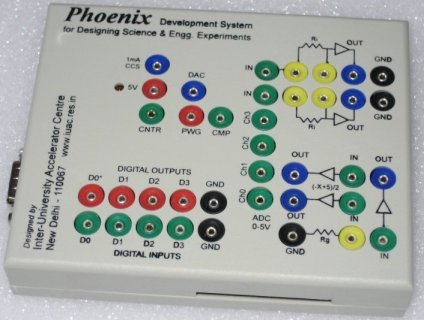
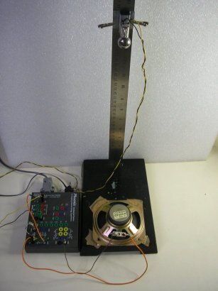
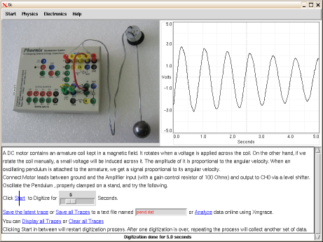
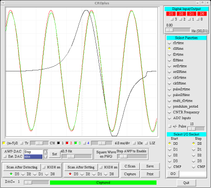

...making Linux just a little more fun!
Smile Maker [britto_can at yahoo.com]
Folks:
If I have got mails which does not contain <MydomainName > in the from address which is sent to some aliases should get "redirected" to my account.
Any idea..
-- Britto
Ben Okopnik [ben at linuxgazette.net]
[[[ I've changed the subject line from the undescriptive "can u help...." -- Kat ]]]
----- Forwarded message from nick zientarski <nick81z@hotmail.com> -----
From: nick zientarski <nick81z@hotmail.com> To: editor@linuxgazette.net Subject: can u help.... Date: Mon, 14 Jul 2008 02:16:57 -0400hello~
i bought an OLPC "give one/get one" computer, well...4 total, one for my
mother and I...we need a little help with getting started on the linux
system...
the more i read about this open source way to compute gets me more and
more excited, it is just a little much starting out...any resources or
service companies i could mail to start our new relationship with
linux..we would be more than greatful
thank you for your time  ~nick zientarski~
~nick zientarski~
----- End forwarded message -----
Tony Davis [tdavis803 at bellsouth.net]
Sirs i have a averatec 5400 and when i try to type something i get this get n40bers and sy0b3es What is wrong
THANK You
Tony Davis
the only way i can type anything is to hold down a fn key
[ Thread continues here (2 messages/1.33kB) ]
Ignacio, Domingo Jr Ostria - igndo001 [DomingoJr.Ignacio at postgrads.unisa.edu.au]
Hello everyone,
Good day!
I am using tcpdump in my linux system to sniff and capture tcp packet headers.
I inserted a new variable, srtt, into the print_tcp.h header file and tcp.c source code. I want to print/ouput/capture the inserted variable srtt into the tcp packet headers once I run tcpdump. Any idea on how to go about this?
However, once I run tcpdump with all the changes I made (of course, after configuring and making) and I got an error: Bad header length and <bad opt>.
I tried to increase the snaplength to 1514 but I still got the same errors. What seems to be the problem, anyone? Thanks!
Also, I cannot see the inserted srtt variable in the tcpdump trace files. Any idea on these guys?
I don't know if this is the right venue to ask these question since this is for linux queries but still I am hoping that anyone has an experience on this. Help would be appreciated.
Cheers, Dom
[ Thread continues here (5 messages/5.48kB) ]
Jimmy O'Regan [joregan at gmail.com]
I was trying to point a friend of mine to http://librivox.org today,
and for some reason he couldn't connect to it. The quickest way of
finding a proxy he could use was via Google Translate (he's Polish).
When I looked at the page, however, I say that the phrase 'some free
software' (in refernce to open source software, such as Audacity) had
become 'niektóre wolne oprogramowanie *rejestrujące*' - 'some
registered free software' - which makes me wonder if Google's next
service will be nagware.google.com
[ Thread continues here (2 messages/1.47kB) ]
Joey Prestia [joey at linuxamd.com]
Hi all,
I am administering a e-mail server running RHEL 5 with sendmail 8.13 and using dovecot imap most of the users are going to need to be able to send mail from their laptops and i have no idea what network they will be utilizing. After looking at http://www.joreybump.com/code/howto/smtpauth.html and following the guide there I was able to get authenticated relay enabled.
I am using saslauthd and never created sasl passwords but following the guide at http://www.joreybump.com/code/howto/smtpauth.html was able to get it working. now after 6 months of no problem and then the other day changed my password to a stronger one now I cannot relay from anywhere.
[root@linuxamd ~]# sasldblistusers2 listusers failed [root@linuxamd ~]# [root@linuxamd ~]# testsaslauthd -u joey -p ****** 0: NO "authentication failed"
is this my problem?
All accounts are stored in /etc/passwd saslauthd is running and I performed a restart of saslauthd with out any errors.
I have tried with both kmail and thunderbird. My usual settings are tls if available and and smtp auth with username and password I thought at first that this was the problem it was using the old password so I removed the default smtp server settings and removed the passwords. So it would force me to manually enter the password again I did this while on another network and tried to send with no success. As soon as I disconnected from the neighboring lan and connected to the local lan it took and sent but I am unsure if it is using auth it seems like it is only sending because its on my lan how would I verify the authentication process is working at all? I am not certain exactly how saslauthd works and have seen nothing unusual in my logs. Thunderbird simply times out when I try to send from other networks and tells me to check my network settings.
Thanks in advance,
-- Joey Prestia L. G. Mirror Coordinator http://linuxamd.com Main Site http://linuxgazette.net
[ Thread continues here (18 messages/42.62kB) ]
Deividson Okopnik [deivid.okop at gmail.com]
Quick regular expressions questions, I have a string and i want to return only whats inside the quotes inside that string - example the string is -> "Deividson" Okopnik <-, and i want only -> "Deividson" <-. Its guaranted that there will be only a single pair of double-quotes inside the string, but the lenght of the string inside it is not constant.
Im using PHP btw
Thanks
DeiviD
[ Thread continues here (13 messages/16.08kB) ]
don warner saklad [don.saklad at gmail.com]
For nonprogrammer type users what other existing RMAIL Emacs commands or techniques or mechanisms are useful for sorting out spam messages more efficiently and effectively?... for example in RMAIL Emacs laboriously sorting out spam messages can be tried with Esc C-s Regexp to summarize by: ...
For nonprogrammer type users it appears that using existing commands for each session is an alternative to attempts at composing programs or tweaking others' programs or the difficulties of dotfiles.
C-M-s runs the command rmail-summary-by-regexp
as listed on the chart
C-h b describe-bindings
Key translations:
key binding
--- -------
C-x Prefix Command
C-x 8 iso-transl-ctl-x-8-map
^L
Major Mode Bindings:
key binding
--- -------
C-c Prefix Command
C-d rmail-summary-delete-backward
RET rmail-summary-goto-msg
C-o rmail-summary-output
ESC Prefix Command
SPC rmail-summary-scroll-msg-up
- negative-argument
. rmail-summary-beginning-of-message
/ rmail-summary-end-of-message
0 .. 9 digit-argument
< rmail-summary-first-message
> rmail-summary-last-message
? describe-mode
Q rmail-summary-wipe
a rmail-summary-add-label
b rmail-summary-bury
c rmail-summary-continue
d rmail-summary-delete-forward
e rmail-summary-edit-current-message
f rmail-summary-forward
g rmail-summary-get-new-mail
h rmail-summary
i rmail-summary-input
j rmail-summary-goto-msg
k rmail-summary-kill-label
l rmail-summary-by-labels
m rmail-summary-mail
n rmail-summary-next-msg
o rmail-summary-output-to-rmail-file
p rmail-summary-previous-msg
q rmail-summary-quit
r rmail-summary-reply
s rmail-summary-expunge-and-save
t rmail-summary-toggle-header
u rmail-summary-undelete
w rmail-summary-output-body
...
[ Thread continues here (3 messages/4.45kB) ]
Ignacio, Domingo Jr Ostria - igndo001 [DomingoJr.Ignacio at postgrads.unisa.edu.au]
Hi guys,
In the tcp.h header file , I found the variables:
#define TCPOPT_WINDOW 3 #define TCPOPT_SACK 5 #define TCPOPT_TIMESTAMP 8
Does anyone can help me with what the numbers 3,5,8 means? Are they the tcp option numbers in the TCP header? Or are they port definitions?
Cheers, Dom
[ Thread continues here (3 messages/4.94kB) ]
René Pfeiffer [lynx at luchs.at]
Hello!
I am playing with 2.6.26, e2fsprogs 1.41 and ext4, just to see what ext4 can do and what workloads it can handle. Do you know of any tools that can populate a filesystem with a random amount of files filled with random data stored a random amount of directories? I know that some benchmarking tools do a lot of file/directory creation, but I'd like to create a random filesystem layout with data, so I can use the usual tools such as tar, rsync, cp and others to do things you usually do when setting up, backuping and restoring servers.
Curious, René.
[ Thread continues here (13 messages/24.92kB) ]
Ben Okopnik [ben at linuxgazette.net]
Hi, all -
I'm going to be teaching a class next week in which the student machines are going to have Fedora Core 6 installed on them, so the poor on-site tech guy is going to be spending his weekend flipping the 6 installation CDs among a dozen-plus machines - not a happy-fun thing at all, as I see it.
Does anyone know of a way to set up an "install server" for FC6? Perhaps
I've been spoiled by the Solaris 'jumpstart' system, where you set up a
simple config file, tell your hosts to load from the jump server, and
walk away - but I can't help feeling that anything Solaris can do, Linux
can do better.
-- * Ben Okopnik * Editor-in-Chief, Linux Gazette * http://LinuxGazette.NET *
[ Thread continues here (11 messages/12.45kB) ]
kanagesh radhakrishnan [rkanagesh at gmail.com]
Hello,
I am working on an ARM based custom development board that has a Micro SD connector.
I use Linux (kernel version 2.6.24) on the board and I have support for the Micro SD cards. The SD driver has support for hotplug. At the bash prompt on the target board, I am able to mount the card, write data to it and read data from it. What utility do I need to add to the root file system for the card to be detected automatically when it's inserted and the file system on the card's media to be mounted to a specified mount point?
A couple of years ago, I was working with PCMCIA Flash memory cards and USB memory disks. There used to be a utility called Card Manager (cardmgr) that detects the insertion of a PCMCIA flash memory card and mounts it automatically. USB memory disks used to be automounted by the hotplug scripts. Is there any utility similar to this for SD/MMC/Micro SD cards?
Thanks in advance, Kanagesh
[ Thread continues here (2 messages/1.90kB) ]
Smile Maker [britto_can at yahoo.com]
Folks:
When you do scp to remote machine, linux assumes to overwrite the target file if exists. Is there any way to check whether the target file exists and then copy the actual file.
--- Britto
[ Thread continues here (3 messages/2.04kB) ]
Mulyadi Santosa [mulyadi.santosa at gmail.com]
Hello gang!
As the subject says, I have hard times understanding the result of snmpwalk against those platforms. Not that I can't query those nodes, but snmpwalk is unable to translate the numeric form of OID into human readable string label.
More precisely, I need to find the MIB files that describe the returned SNMP data. So far, my best bet is by referring to oidview.com, but the MIB files I have downloaded from this site don't always work as expected i.e some OIDs are still in numeric form, thus I don't whether it refers to disk usage, cpu utilization and so on.
I will highly appreciate any inputs regarding this issue.
regards,
Mulyadi.
[ Thread continues here (8 messages/10.32kB) ]
Mulyadi Santosa [mulyadi.santosa at gmail.com]
Hi gang...
Sorry if the subject sounds confusing, but I wonder, is it possible? AFAIK, each CUPS daemons manage its own queue on the node's own disk...and by design I don't see CUPS is designed as cooperative daemon.
By "cooperative" I mean something like having unified print spool, unified and shared printer device's name among CUPS daemons...and so on.
Looking forward to hear any ideas about it...
regards,
Mulyadi.
[ Thread continues here (7 messages/6.96kB) ]
Mulyadi Santosa [mulyadi.santosa at gmail.com]
Hi all
Just wanna say big thanks for your suggestions when I asked about CUPS configuration days ago. it works quite nicely in my environment.
I know I haven't share much for LG but you answered my question faster than my close colleagues/partner. I highly appreciate that. You guys really do something valuable in your free time.
God bless!
regards,
Mulyadi.
Simon Lascelles [simon.lascelles at rems.com]
I would like to thank everyone for their comments. I do hope the topic has not made too many peoples blood pressure to rise to "dangerous levels", although it is clear a topic several people are passionate about. In summary it looks to me that Linux could be used on one of two basis's;
1. If we were not a UK company (or any company citied in the restrictions). To resolve this we could establish an off shore company to provide the distribution to circumvent this restriction.
2. Encryption was removed from the package. A task I believe is relatively simple to achieve.
Two points I would like to make for your information and further comment is that I believe the restriction on US content is 10% not 1% as one person commented. Secondly I will of course seek legal advice before proceeding but wanted to see if this issue had been seen before, by the experts (the legal guys don't tend to know what they are talking about anyway). Thank you once again and if you have further advice on the issue it would be gratefully appreciated.
-- Simon Lascelles Managing Director REMS International Email: simon.lascelles@rems.com <blocked::mailto:simon.lascelles@rems.com> Web Site: http://www.rems.com/ <http://www.rems.com/> Mobile: 07956 676112 Telephone: 01727 848800;Yahoo: rems25x8@yahoo.com
Mobile communications are changing the face of business, and organisations that deploy mobile solutions will reap the greatest competitive advantage
_________________________________________________
[ Thread continues here (2 messages/4.38kB) ]
Amit k. Saha [amitsaha.in at gmail.com]
On Mon, Jun 23, 2008 at 5:11 PM, Ben Okopnik <ben@linuxgazette.net> wrote:
> On Mon, Jun 23, 2008 at 11:52:44AM +0530, Amit k. Saha wrote: >> Hello TAG, >> >> I have a text file from which I want to list only those lines which >> contain either pattern1 or patern2 or both. >> >> How to do this with 'gre'p? >> >> Assume, file is 'patch', and 'string1' and 'string2' are the two patterns. >> >> The strings for me are: 'ha_example' and 'handler'- so I cannot >> possibly write a regex for that. > > Over the years, I've developed a working practice that says "don't use > grep for anything more than a simple/literal search." Remembering the > bits that you have to escape vs. those you don't is way too much of a > pain. Stick with 'egrep', and you don't have to remember all that stuff. > > `` > egrep 'string1|string2' filepattern
hmm. Works great.
-Amit
-- Amit Kumar Saha http://blogs.sun.com/amitsaha/ http://amitksaha.blogspot.com Skype: amitkumarsaha
Jimmy O'Regan [joregan at gmail.com]
Cognitive released the source of the kernel of their OCR system (http://www.cuneiform.ru/eng/index.html), and the linux port (https://launchpad.net/cuneiform-linux) has reported their first success: https://launchpad.net/cuneiform-linux/+announcement/561
Hopefully, they'll be able to get the layout engine working - I've used the Windows version, and it was very good at analysing a complicated mixed language document.
[ Thread continues here (3 messages/1.29kB) ]
Jimmy O'Regan [joregan at gmail.com]
---------- Forwarded message ----------
From: Jimmy O'Regan <joregan@gmail.com> Date: 2008/7/3 Subject: Re: Playing With Sid : Apertium: Open source machine translation To: Arky <rakesh_ambati@yahoo.com>
2008/7/3 Arky <rakesh_ambati@yahoo.com>:
> Arky has sent you a link to a blog: > > Accept my kudos >
Thanks, and thanks for the link
Would you mind if I forwarded your e-mail to Linux Gazette? LG has a lot of Indian readers, and maybe we can recruit some others who would be interested in helping with an Indian language pair.
Also, I note from your blog that you have lttoolbox installed, and that you can read Devanagari - we have a Sanskrit analyser that uses Latin transliteration; I tried to write a transliterator to test it out, but, alas, it doesn't work, and I can't tell why.
It's in our 'incubator' module in SVN, here: http://apertium.svn.sourceforge.net/svnroot/apertium/trunk/apertium-sa-XX/apertium-sa-XX.ucs-wx.xml
> Blog: Playing With Sid > Post: Apertium: Open source machine translation > Link: > http://playingwithsid.blogspot.com/2008/07/apertium-open-source-machine.html > > -- > Powered by Blogger > http://www.blogger.com/ >
[ Thread continues here (6 messages/9.61kB) ]
Jimmy O'Regan [joregan at gmail.com]
[I'm assuming Arky's previous permission grant still stands, also cc'ing the apertium list, for further comment]
---------- Forwarded message ----------
From: Rakesh 'arky' Ambati <rakesh_ambati@yahoo.com> Date: 2008/7/11 Subject: Apertium-transfer-tool info request To: joregan@gmail.com
Hi,
I am trying to use apertium-transfer-tools on Ubuntu Hardy, can you kindly point to working example/tutorial where transfer rules are generated from alignment templates.
Cheers
--arky
Rakesh 'arky' Ambati Blog [ http://playingwithsid.blogspot.com ]
[ Thread continues here (3 messages/13.54kB) ]
Felipe Sanchez Martinez [fsanchez at dlsi.ua.es]
Hi,
Jimmy, very good explanation, :D
> Also; the rules that a-t-t generates are for the 'transfer only' mode > of apertium-transfer: this example uses the chunk mode - most language > pairs, unless the languages are very closely related, would really > be best served with chunk mode. Converting a-t-t to support this is on > my todo list, and though doing it properly may take a while, I can > probably get a crufty, hacked version together fairly quickly. With a > couple of sed scripts and an extra run of GIZA++ etc., we can also > generate rules for the interchunk module.
We could exchange some ideas about that, and future improvements such as the use of context-dependent lexicalized categories. This would give a-t-t better generalization capabilities and make the set of inferred rules smaller.
> The need for the bilingual dictionary seemed a little strange to me at > first, but Mikel, Apertium's BDFL, explained that it really helps to > reduce bad alignments. This probably means that a-t-t can't generate > rules for things like the Polish to English 'coraz piêkniejsza' -> > 'prettier and prettier', but I haven't checked that yet.
The bilingual dictionary is used to derive a set of restrictions to prevent an alignment template (AT) to be applied in certain conditions in which it will generate a wrong translation. Restrictions refer to the target language (TL) inflection information of the non-lexicalized words in the AT. For example, suppose that you want to translate the following phrase from English into Spanish:
"the narrow street", with the following morphological analysis (after tagging): "^the<det><def><sp>$ ^narrow<adj><sint>$ ^street<n><sg>$"
The bilingual dictionary says: '' ^narrow<adj><sint>$ -------> estrecho<adj><f><ND>$ ^street<n><sg>$" -------> calle<n><f><sg>$ ''
Supose that you want to apply this AT:
SL: the<det><def><sp> <adj><sint> <n><sg>
TL: el<det><def><f><sg> <n><f><sg> <adj><f><sg>
Alignment: 1:1 2:3 3:2
Rstrictions (indexes refer to the TL part of the AT):
w_2 = n.f.* w_3 = adj.*,
* Note: "the" and "el" are lexicalized words
This AT generalizes:
[ ... ]
[ Thread continues here (6 messages/15.77kB) ]
[ In reference to "Introduction to Shell Scripting, part 6" in LG#116 ]
Mr Dash Four [mr.dash.four at googlemail.com]
Hi Gang,
_* *_Found this list thanks to the excellent article of Ben Okopnik here <http://linuxgazette.net/116/okopnik1.html> - I was trying to create a floppy disk to help me boot-up an old PC (PII, 256MB RAM, 2xUSB + FDD), by transferring the control over to the USB drive (which can't be booted-up directly as the PC is too old). The USB contains slimmed-down version of FC8 containing propriety tools and programs. I wasn't successful, though this is not why I am writing this email (help with the floppy-usb boot-up is also appreciated though that may be a subject to a different email as Ben's article points out that I would need Knoppix Linux, but I have FC8 on the USB drive). Anyway...
After unsuccessfully trying to make the boot-up floppy, allowing me to boot-up the USB drive I tried to make a bare-bone boot-up floppy, containing just stage1 & stage 2 files to get me to the GRUB prompt (see 'What happened' below) with the intention of trying my luck from there and this is where I encountered my problem.
_*The problem:*_ I can't boot from my HDD - when I try I see the word "GRUB " on the screen and then nothing (this is not the GRUB prompt - it is just a message on the screen saying "GRUB " and then the system halts)!
I can access all my partitions - no problem (none of them appear damaged, same is valid for my partition table, thank god) using Boot/Rescue CD, which I made following the instructions shown in section 3.4 here <http://orgs.man.ac.uk/documentation/grub/grub_3.html>.
_*My system:*_
Fedora Core 8 with the latest updates, P4-M, 1GB RAM, 80GB HDD, split into the following partitions: hda1 - primary, WinXP, NTFS hda2 - extended hda5 - logical, data disk, NTFS hda6 - logical, RedHat 9, ext2 hda7 - logical, Fedora Core 8 /boot, ext2 hda8 - logical, Fedora Core 8 LVM volumes (5 of them mapped to /, /usr, /var, /home and /var/cache), lvm hda9 - logical, data backups, NTFS hda3 - primary, Service/Rescue DOS, FAT
GRUB used to be in my MBR as through its menu I used to boot all partitions successfully (up until now that is). One other thing I need to point out - as soon as the partitions were made I have created a copies of the boot sectors of all my partitions, plus the main MBR sector using these commands:
%dd if=/dev/hda of=hda-mbr-full bs=512 count=1 # mbr including partitions %dd if=/dev/hda of=hda-mbr-nopart bs=446 count=1 # no partition information, just the MBR %dd if=/dev/hdaX of=hdaX-bootsect bs=512 count=1 # boot record of a particular partition
where 'X' is the number of the partition. The files were saved on a separate usb device (memory stick) for safekeeping.
I should also point out that within FC8 Linux my HDD is mapped as /dev/sda (not /dev/hda).
[ ... ]
[ Thread continues here (4 messages/20.03kB) ]
[ In reference to "Understanding Threading in Python" in LG#107 ]
Ben Okopnik [ben at linuxgazette.net]
----- Forwarded message from Greg Robinson <grobinson@google.com> -----
Date: Wed, 2 Jul 2008 20:41:13 -0700 From: Greg Robinson <grobinson@google.com> To: editor@linuxgazette.net Subject: Understanding threading in PythonHello,
I appreciated the article entitled "Understanding Threading in Python" by Krishna G Pai. However, it states that "there is no significant difference between threaded and non threaded apps." While this is true for the specific example used in the article, the statement is misleading. Don't neglect the advantages of threading, even with green threads such as those in Python, in situations where the thread is likely to block on something other than local processing. For example, if someone fires off numerous RPCs to multiple computers in succession, each RPC call may have to sit and wait for the callback. This can take much longer than dispatching multiple simultaneous RPCs and handling each one concurrently.
Cheers, Greg Robinson
----- End forwarded message -----
[ In reference to "2-Cent Tips" in LG#152 ]
Greg Metcalfe [metcalfegreg at qwest.net]
Regarding "2-cent tip: Removing the comments out of a configuration file":
I don't like to invoke Yet Another Interpreter (Perl, Python, etc.) for simple problems, when I've already got a perfectly good one (the bash shell) running, and all those wonderful GNU programs. So I often view 'classic' config files (for httpd, sshd, etc) via the following, which I store as ~/bin/dense:
!#/bin/bash # Tested on GNU grep 2.5.1 grep -Ev ^\([[:space:]]*#\)\|\(^$\) $1
~/bin is in my path, so the command is simply 'dense PATH/FILE'. This code strips comments, indented comments, and blank lines.
Of course, if you need this frequently, and bash is your login shell, a better approach might be to just add:
alias dense='grep -Ev ^\([[:space:]]*#\)\|\(^$\)'to your ~/.bashrc, since it's so small, thus loading it into your environment at login. Don't forget to source the file via:
'. ~/.bashrc'after the edit, if you need it immediately!
Regards, Greg Metcalfe
[ Thread continues here (3 messages/8.53kB) ]
[ In reference to "Apertium: Open source machine translation" in LG#152 ]
Jimmy O'Regan [joregan at gmail.com]
I mentioned the infinite monkeys idea in relation to SMT in my article... I found today that it has been done: http://www.markovbible.com/
"You've seen the King James, the Gutenberg and the American Standard, but now here is the future ........ The Markov Bible.
Everyone has heard the saying 'a million monkeys typing for a million years will eventually produce the bible'.
Well, we have done it!!! And in a far shorter time.
Using our team of especially trained Markov Monkeys, we can rewrite whole books of the bible in real time."
[ Thread continues here (2 messages/4.45kB) ]
[ In reference to "Automatic creation of an Impress presentation from a series of images" in LG#116 ]
Karl-Heinz Herrmann [kh1 at khherrmann.de]
Hi TAG,
I got an email a few days back including a patch to the img2ooImpress.pl script in issue 116. I would like to forward the following discussion to TAG (with permission, Rafael is CC'ed):
-------------------------------------------------------------------------
From: Rafael Laboissiere <rafael@debian.org> To: Karl-Heinz Herrmann <kh1@khherrmann.de> Subject: Re: Bug in your img2ooimpress.pl script Date: Tue, 24 Jun 2008 21:53:36 +0200 User-Agent: Mutt/1.5.17+20080114 (2008-01-14)* Karl-Heinz Herrmann <kh1@khherrmann.de> [2008-06-24 21:39]:
> thanks for the patch... actually I stumbled onto the problem myself > after an upgrade of OODoc some time back and sent a correction to LG > which got published as talkback for the article. That patch is there: > http://linuxgazette.net/132/lg_talkback.html#talkback.02 > > but as #116 was before they introduced talkbacks the talkback is not > actually linked in the original article so it doesn't help people > much. As LG is mirrored in many places the original articles are not > changed usually.
Indeed... Sorry for bothering you with this. It is too bad that the LG article does not link to the talkback.
> I hope -- apart from having to find and fix that bug -- that script > was helpful
Yes, it was. I wrote another Perl script based on yours to directly convert a PDF file into ooImpress. Besides the OpenOffice::OODoc module, it needs the xpdf-utils (for pdfinfo), the pdftk, and the ImageMagick (for convert) packages. The script is attached below. [...]
and another followup by Rafael:
I am attaching below an improved version of the script. I improved the header material, put it under the GPL-3+ license and it now accepts a --size option.
I also put the script in a (kind of) permanent URL: http://alioth.debian.org/~rafael/scripts/pdf2ooimpress.pl
----------------------------------------------------------------------
Is there a possibility to "upgrade" the older TAG pages with the talk-back links? I'm of course aware of the mirror problem.
[[[ FYI to Karl-Heinz (and everyone else interested) - I manually build the Talkback style for dicussions of articles that predate the Talkback link. It doesn't help during the discussion, but it does make the published version look just as spiffy! -- Kat ]]]
In any case his improved script version might be a nice 2c tip (or mail bag) contribution.
K.-H.
[ Thread continues here (6 messages/14.69kB) ]
[ In reference to "Introduction to Shell Scripting, part 6" in LG#116 ]
Mr Dash Four [mr.dash.four at googlemail.com]
Hi, Ben,
> Please don't drop TAG from the CC list; we all get "paid" for our time > by contributing our technical expertise to the Linux community, and that > can't happen in a private email exchange.Apologies, it wasn't intentional - I've got your message and hit the 'reply' button without realising there was a cc: as well.
>> Here is my plan (funny enough I was about to start doing this in about 2 >> hours and possibly spend the whole of tomorrow - Sunday - depending in >> what kind of a mess I may end up in): >> >> 1. Backup my entire current /boot partition (it is about 52MiB). >> 2. Restore a month-old backup of this /boot partition to a safe' location >> (USB drive). As this backup is old apart from the new kernel version it >> won't contain anything wrong with the partition and my first task will be >> to compare the files, which may cause my partition not to boot (menu.lst >> etc) as well as the boot sector. I would expect to see changes and will >> ignore the ones caused by the kernel updates (like new versions of the >> vmlinuz- file). >> 3. If I find such changes between the 'old' backup and the new one, which >> prevent me from booting up the new partition then I will reverse them and >> see if I can boot up.The first two steps went off without a hitch. To my big surprise I did NOT find any significant changes to the /boot partition. I've attached 'files.zip' which contains a few interesting files in it. 'boot_list.txt' and 'boot_grub_list.txt' lists the contents of my '/' and '/grub' directories of the '/boot' partition. The only difference between the old (backed up) and the new was file size and different version numbers of the kernel files (vmlinuz, initrd and the like).
>> 4. If there are NO changes I could find (the least favourable option for >> me as I will enter uncharted waters here!) then I would have no option, >> but to run grub-install /dev/sda while within FC8 Live CD to restore GRUB >> in the hope of getting GRUB to load. If I could then boot normally from >> the hard disk then I would compare what has been done (both in terms of >> files and the boot sector - bot on the /boot partition as well as the >> absolute on /dev/sda) and see if I can find any differences. If not, well >> ... it will remain a great mystery what really went wrong, sadly! >>Well, this was my almost last-chance saloon and given that 'grub-install' messed up my mbr completely (read below) I was VERY reluctant to use it again to re-install GRUB, so after re-reading the original article on how to re-install it (refer to my 1st email) coupled with me getting nowhere with managing to boot from the CD via the GRUB menu (instead of typing each and every grub command) I did the following:
[ ... ]
[ Thread continues here (3 messages/16.22kB) ]
Amit k. Saha [amitsaha.in at gmail.com]
Hi Gang,
Just wanted to share this with you: (I am sure most of you already know this)
Shells cache the commands which you have executed so as to save the time required to search your PATH every time you execute it. Type 'hash' in your terminal and you will see something like:
$ hash hits command 1 /usr/bin/which 2 /usr/local/bin/log4cpp-config 1 /usr/bin/gnome-screensaver
Every time you execute a (non shell-builtin) command, it is automatically added to the 'cache' and lives there for the rest of the session- once you logout or even close the pseudo-terminal (like gnome-terminal) it is gone.
Another observation, the most recently executed command is added to the bottom of the list.
Happy to share!
I found this a good read: http://crashingdaily.wordpress.com/2008/04/21/hashing-the-executables-a-look-at-hash-and-type/
-Amit
-- Amit Kumar Saha http://blogs.sun.com/amitsaha/ http://amitksaha.blogspot.com Skype: amitkumarsaha
By Deividson Luiz Okopnik and Howard Dyckoff

|
Contents: |
Please submit your News Bytes items in plain text; other formats may be rejected without reading. (You have been warned!) A one- or two-paragraph summary plus a URL has a much higher chance of being published than does an entire press release. Submit items to bytes@linuxgazette.net.
 Xandros Buys Rival Linspire
Xandros Buys Rival Linspire
At the end of June, Xandros acquired Linspire as a wholly-owned subsidiary that it intends to manage as a separate division. Financial information was not disclosed, even to Linspire's shareholders. (The Board of Directors was fired last year by former CEO and current Board chairperson Michael Robertson.) Other details on the acquisition are available as an FAQ on the Linspire Web site: http://www.linspire.com/lindows_news_pressreleases.php
Xandros expressed a commitment to maintain the open source "Freespire" project, which is a free and redistributable version of Linspire. Also, Linspire CEO Larry Kettler and other Linspire managers will be joining the Xandros management team.
Major motives for the deal were providing Xandros with Linspire's advanced CNR technologies and Linux expertise. It also enlarges the Xandros customer base and support network. CNR is an automated update technology and software delivery service that has helped popularize Linspire (formerly called "Lindows") with former Windows users. Xandros expects to incorporate CNR by the end of July.
"Products like the ASUS Eee PC have demonstrated the huge potential market for Linux-based OEM netbook solutions, and CNR will help Xandros make these platforms easy to enhance and maintain, while providing on-demand delivery of a growing number of Linux applications, utilities, games, and content", said Andreas Typaldos, Xandros CEO. "Linspire's CNR technologies will speed up Xandros's expansion into the applications space."
Former Linspire CEO Kevin Carmony has used his blog to discuss potentially sordid aspects of the transaction, including charges that Board Chairperson Michael Robertson may be trying to convert Linspire assets to cash for personal use and also may be involved in rumored Microsoft negotiations with AOL and Xandros. See: http://kevincarmony.blogspot.com/2008/06/xandros-acquires-linspire-assets-in.html
Red Hat Voted "Greenest" Operating System
A recent Network World comparison examined power consumption to determine who had the "greener" operating system: Windows, Red Hat, and openSUSE. Network World ran multiple power consumption tests using Red Hat Enterprise Linux 5.1, SUSE Enterprise Linux 10 SP1, and Windows Server 2008 Enterprise Edition on servers from Dell, IBM, and HP. Red Hat Enterprise Linux ranked at the top in keeping power draw in check, pulling about 12 percent less power than did Windows 2008 on identical hardware. This reduced power draw was evident across testing in both performance and power saving modes, and included all server models used in the testing.
From the summary at http://www.linuxworld.com/research/2008/060908-green-windows-linux.html:
"We ran multiple power consumption tests... on four popular 1U server machines, one each from Dell and IBM and two from HP. The results showed that while Windows Server 2008 drew slightly less power in a few test cases when it had its maximum power saving settings turned on, it was RHEL that did the best job of keeping the power draw in check across the board." The tests also showed that firmware updates and new drivers were needed to take full advantage of newer chip-based power optimizations such as CPU throttling.
Red Hat noted its involvement in projects focused on saving power. Example of these efforts include http://www.LessWatts.org, an Intel-sponsored project bringing together developers, users, and sysadmins all in the effort to create a community around saving power on Linux. One part of the LessWatts program is PowerTOP, a Linux tool that helps identify programs that are power-hungry while a system is idle. PowerTOP technology is also being applied to the kernel itself, where there is ongoing auditing work to find pollers. The end result is a more efficient kernel.
Another area of development concerns support for CPU clock frequency scaling. Clock scaling allows us to change the clock speed of a running CPU on the fly. Red Hat Enterprise Linux 5.2 has support for Intel's Dynamic Acceleration Technology, which provides power saving by quiescing idle CPU cores, and also offers performance gains by potentially overclocking busy cores within safe thermal levels. Red Hat worked close with AMD to prove support for PowerNow! - a technology for power management. The new tickless kernel provided in Fedora 9 is likely to move to Red Hat Enterprise Linux in the future. This allows the kernel to properly idle itself. Today, the kernel tick-rate is 1000/second, so it is hard to quiesce it. The tickless kernel sets the system into a low-power state based on knowledge of future timer-based events. Long, multi-second idle periods are possible.
Kernel 2.6.26 Released with New Virtualization Support, KDB
The new kernel, version 2.6.26, was released in mid-July, and adds support for read-only bind mounts, x86 Page Attribute Tables, PCI Express ASPM (Active State Power Management), ports of KVM to IA64, S390 and PPC, other KVM improvements including basic paravirtualization support, preliminary support of the future 802.11s wireless mesh standard, a new built-in memory tester, and a kernel debugger.
Although Linux has supported bind mounts, a sort of directory symlink that allows sharing the contents of a directory in two different paths, since kernel 2.4, a bind mount could not be made read-only. That changes with 2.6.25, with a more selective application of r/o properties for improved security.
Also included are several file system updates, including IPv6 support for NFS server export caches. IPv6 support also extends to TCP SYN cookies.
Kernel 2.6.25 has improved USB and Infiniband support. This release adds support for the OLPC XO hardware. This includes the ability to emulate the PCI BARs in the kernel. This also adds functionality for running EC commands and a CONFIG_OLPC. A number of OLPC drivers depend upon CONFIG_OLPC. A forward-looking addition is the increase of maximum physical memory size in 64-bit kernels from 40 to 44 bits, in preparation for future chips that support larger physical memory sizes.

DeepSec IDSC is an annual European two-day in-depth conference on computer, network, and application security. In addition to the conference with thirty-two sessions, seven two-day intense security training courses will be held before the main conference. The conference program includes code auditing, SWF malware, Web and desktop security, timing attacks, cracking of embedded devices, LDAP injection, predictable RNGs and the aftermath of the OpenSSL package patch, in-depth analysis of the Storm botnet, VLAN layer 2 attacks, digital forensics, Web 2.0 security/attacks, VoIP, protocol and traffic analysis, security training for software developers, authentication, malware de-obfuscation, in-depth lockpicking, and much more.
openSUSE 11.0 goes GA
The openSUSE Project announced the release of openSUSE 11.0 in June. The 11.0 release of openSUSE includes more than 200 new features specific to openSUSE, a redesigned installer that makes openSUSE easier to install, faster package management thanks to major updates in the ZYpp stack, and KDE 4, GNOME 2.22, Compiz Fusion for 3D effects, and much more. Users have the choice of GNOME 2.22, KDE 4, KDE 3.5, and Xfce. GNOME users will find a lot to like in openSUSE 11.0. openSUSE's GNOME is very close to upstream GNOME.
GNOME 2.22 in openSUSE 11.0 includes the GNOME Virtual File System (GVFS), with support for networked file systems, PulseAudio, improvements in Evolution, and Tomboy. openSUSE 11.0 includes a stable release of KDE 4.0. This release includes represents the next generation of KDE and includes a new desktop shell, called Plasma, a new look and feel (called Oxygen), and many interface and usability improvements.
KControl has been replaced with Systemsettings, which makes system configuration much easier. KDE's window manager, KWin, now supports 3-D desktop effects. KDE 4.0 doesn't include KDEPIM applications, so the openSUSE team has included beta versions of the KDEPIM suite (KMail, KOrganizer, Akregator, etc.) from the KDE 4.1 branch that's in development and scheduled to be released in July and for online update. (KDE 3.5 is still available on the openSUSE DVD for KDE users who aren't quite ready to make the leap to KDE 4.)
Applications also include Firefox 3 and OpenOffice.org 2.4. Get openSUSE here: http://software.opensuse.org/
Gentoo 2008.0 Released
The Gentoo 2008.0 final release, code-named "It's got what plants crave," contains numerous new features including an updated installer, improved hardware support, a complete rework of profiles, and a move to Xfce instead of GNOME. LiveDVDs are not available for x86 or AMD64, although they may become available in the future.
Additional details include:
Improved hardware support: includes moving to the 2.6.24 kernel and many new drivers for hardware released since the 2007.0 release.
Xfce instead of GNOME on the LiveCD: To save space, the LiveCDs switched to the smaller Xfce environment. This means that a binary installation using the LiveCD will install Xfce, but GNOME or KDE can be built from source.
Updated packages: Highlights of the 2008.0 release include Portage 2.1.4.4, a 2.6.24 kernel, Xfce 4.4.2, gcc 4.1.2, and glibc 2.6.1.
Get Gentoo at: http://www.gentoo.org/main/en/where.xml
Elyssa Mint, Xfce Community Edition RC1 BETA 025 Released
This is the first BETA release of the Xfce Community Edition for Linux Mint 5, codename Elyssa, based on Daryna and compatible with Ubuntu Hardy and its repositories.
MintUpdate was refactored and its memory usage was drastically reduced. On some systems, the amount of RAM used by mintUpdate after a few days went from 100MB to 6MB. Mozilla also greatly improved the memory usage in Firefox between version 2 and 3.
Elyssa comes with kernel version 2.6.24, which features a brand new scheduler called CFS (Completely Fair Scheduler). The kernel scheduler is responsible for the CPU time allocated to each process. With CFS, the rules have changed. Without proper benchmarks, it's hard to actually tell the consequences of this change, but the difference in behavior is quite noticeable from a user's point of view. Some tasks seem slower, but overall the system feels much snappier.
Linux Mint 5 Elyssa is supported by CNR.com, which features commercial services and applications that are not available via the traditional channels. The Software Portal feature introduced in Linux Mint 4.0 Daryna is receiving more focus, as it represents the easiest way to install applications. About 10 times more applications will be made available for Linux Mint 5 Elyssa.
Download Linux Mint from this URL: http://www.linuxmint.com/download.php
MindTouch Deki Wiki releases OSSw Enterprise Collaboration PlatformMindTouch announced in July the newest version of its open source collaboration and collective intelligence platform. MindTouch Deki (formerly Deki Wiki) "Kilen Woods" now delivers new workflow capabilities and new enterprise adapters to help information workers, IT professionals, developers, and others connect disparate enterprise systems and data sources.
At the Web 2.0 conference in April, MindTouch showcased the social networking version of Deki Wiki - a free, open source wiki that offers complete APIs for developers. MindTouch enabled users to hook in legacy applications and social Web 2.0 applications for mashups, while enabling IT governance across it all. Deki Wiki is built entirely on a RESTful architecture, and engineered for concurrent processing.
Although there have been recent point releases updating the platform unveiled at OSCon 2007, according to Aaron Fulkerson, co-founder and CEO of MindTouch, this is an enterprise class release and a new platform for Deki Wiki. "MindTouch Deki has evolved into a powerful platform that is the connective tissue for integrating disparate enterprise systems, Web services, and Web 2.0 applications, and enables real-time collaboration... and application integration."
Fulkerson also told Linux Gazette, "MindTouch Deki Enterprise offers adapters to widely-used IT and developer systems behind the firewall and in the cloud, which allows for IT governance no matter where your data lives. MindTouch Deki Enterprise is the only wiki-based platform that offers this level of sophistication and flexibility."
MindTouch Deki "Kilen Woods" addresses the needs of enterprise customers by providing a wiki collaboration interface with a dozen enterprise adapters to corporate systems and new Web services like SugarCRM, Salesforce, LinkedIn, and WordPress, or apps like MySQL, VisiFire, PrinceXML, ThinkFree Office, and more.
Besides these adapters, users have extensions to over 100 Web services to create workflows, mashups, dynamic reports, and dashboards. This allows for a collaborative macro-view of multiple systems in a common wiki-like interface. "Previously we didn't have these workflow capabilities," Fulkerson told Linux Gazette, "that has been under development for most of this year..."
MindTouch Deki enables businesses to connect and mashup application and data silos that exist across an enterprise and effectively fills the collaboration gap across systems. For example, MT Deki can take content from a database server and mash it up with other services, such as Google Earth or Google maps, LinkedIn, or CRM systems.
Site administrators simply need to register selected external applications, and business users can immediately create mashups, dynamic reports, and dashboards that can be shared. For example, with the desktop connector, users can simply drag and drop an entire directory to MindTouch Deki, and the hierarchy will be automatically created as wiki pages. Users can also publish an entire e-mail thread, complete with all attachments, to MT Deki in a single click.
MindTouch Deki "Kilen Woods" was showcased at OSCON in July and is available for download. Desktop videos of MT Deki in operation can be seen at http://wiki.mindtouch.com/Press_Room/Press_Releases/2008-07-23
WINE 1.1.1 Released with Photoshop ImprovementsWINE 1.1.1 was released in mid-July. This was the first development version since the release of WINE 1.0.
WINE 1.1.1 features installer fixes for Adobe Photoshop CS3 and Microsoft Office 2007.
Get the source at: http://source.winehq.org/
Genuitec announces the general availability of Pulse 2.2Genuitec, a founding member of the Eclipse Foundation, announced general availability of Pulse 2.2, a free way to obtain, manage, and configure Eclipse Ganymede and its plugins. Pulse 2.2 will support full Ganymede tool stacks.
Users are able to choose if they want to use the latest Eclipse Ganymede release, stay on the Eclipse Europa stack, or utilize both versions in separate tools configurations with Pulse. With this flexibility, users will not hinder current preferences, projects, or environments, as well as providing a great way to test new Ganymede features.
In addition to Ganymede support, Pulse 2.2 offers an expanded catalog with hundreds of plugins to chose from. Unlike many distribution products, Pulse 2.2 is multiple open source-license compliant.
Download Ganymede today at http://www.poweredbypulse.com/eclipse_packages.php. Pulse 2.2 Community Edition is a free service and is available at http://www.poweredbypulse.com.
Skyway Builder CE now GASkyway Software announces the release and general availability of Skyway Builder Community Edition (CE), the open-source version of our model-centric tool for developing, testing, and deploying Rich Internet Applications (RIAs) and Web services. The GA version of Skyway Builder CE is available for immediate download.
Highlights of Skyway Builder CE include: -- Free and open-source (GPL v3) -- Integrated into Eclipse -- Full Web Application Modeling -- Extensible models -- Build your own building blocks (custom steps) -- Seamless integration of custom Java code and models -- Runtime using Spring Framework
New Canoo UltraLightClient for Faster Web Application DevelopmentCanoo announced in June the new release of its UltraLightClient (ULC), a library to build rich Web interfaces for business applications. Previously announced at JavaOne 2008, Canoo ULC simplifies the development and deployment of Web applications. Canoo has recorded a screencast showing how to develop a sample Web application using this new release.
New features in ULC 08: - easy project setup using a wizard for Eclipse - generates an end-to-end application skeleton from a predefined data structure - high-level component to simplify the development of forms - improved data types - sortable ULC tables by default - data binding
A new developer guide describes how to be productive from day one. The release notes list the changes added to the current product version.
The Canoo development library includes user-interface elements such as tabbed window panes, sortable tables, or drag and drop interactions and keyboard shortcuts.
The final version of UltraLightClient 08 is available for download at the Canoo product Web site. A license costs 1299 Euro per developer, and includes free runtime distribution for any number of servers. A free evaluation license may be obtained for 30 days. Contact Canoo for further details on pricing and licensing.
Talkback: Discuss this article with The Answer Gang
![[BIO]](../gx/authors/dokopnik.jpg)
Deividson was born in União da Vitória, PR, Brazil, on 14/04/1984. He became interested in computing when he was still a kid, and started to code when he was 12 years old. He is a graduate in Information Systems and is finishing his specialization in Networks and Web Development. He codes in several languages, including C/C++/C#, PHP, Visual Basic, Object Pascal and others.
Deividson works in Porto União's Town Hall as a Computer Technician, and specializes in Web and Desktop system development, and Database/Network Maintenance.
Howard Dyckoff is a long term IT professional with primary experience at
Fortune 100 and 200 firms. Before his IT career, he worked for Aviation
Week and Space Technology magazine and before that used to edit SkyCom, a
newsletter for astronomers and rocketeers. He hails from the Republic of
Brooklyn [and Polytechnic Institute] and now, after several trips to
Himalayan mountain tops, resides in the SF Bay Area with a large book
collection and several pet rocks.
Howard maintains the Technology-Events blog at
blogspot.com from which he contributes the Events listing for Linux
Gazette. Visit the blog to preview some of the next month's NewsBytes
Events.

By bhaaluu
This tutorial is for users who are interested in making an MPEG1 video using GNU/Linux and Free Open Source Software. The process described is partly automated with bash shell scripts, but otherwise still relies on handcrafting the video frame by frame. You are expected to know how to compile and install files from source code, use The Gimp, and use Audacity. The tutorial will describe when these tools are to be used. A total of six frames are used to make the video. One is a simple blank screen, filled with black. Two frames require using The Gimp's Text Tool. Three images are used as slides. The Gimp is used to scale those images to fit a specific image size. Audacity is used to edit sound for the video.
Software Tools:
From ImageMagic, the 'convert' and 'mogrify' utilities will be used. 'convert' needs mpeg2encode in order to make an MPEG1 video. mpeg2encode can be obtained from: http://www.mpeg.org/MPEG/MSSG/. You'll need to compile and install it on your computer.
The Gimp is used to make the black screens, title screen, and credits screens.
Audacity is a sound editor, used to edit the sound clips for the video. Audacity exports different audio file formats, such as WAV, MP3, or Ogg Vorbis.
ffmpeg is a computer program that can record, convert, and stream digital audio and video in numerous formats.
ffplay is a video player.
Shell scripts are used to automate repetitive tasks, using variables and 'while' loops. The make_mpeg2encode_parfile script creates a parameter file for the mpeg2encode program.
In this tutorial, we'll make a slideshow-type video. Several slides will fade in and fade out in sequence. An animation sequence could easily be substituted for the slideshow.
It is very helpful to keep the video project organized, so the first thing to do is create a new directory:
$ mkdir newVideoNext, create several subdirectories in the newVideo/ directory:
[newVideo]$ mkdir 00black1001-1010 01title1011-1110 02video1111-1410 03credi1411-1510 04black1511-1520 05makeVideo originalsThese subdirectories will each hold a different set of files. The numbers are the number of frames for each set. This video will have a total of 520 frames. The first ten frames will be black. The title screen will have 100 frames. The video slideshow will have 300 frames. The credit screen will have 100 frames. Finally, there will be ten frames of black at the end.
Use a digital camera to take several photos, then download the photos from the camera to your computer. After the photos are on the computer, edit them in The GIMP, scaling all the photos so they fit in a 640x480 image size. Fill in any space around the image with black. Notes:
Save the digital photos as image0001.ppm, image0002.ppm, and image0003.ppm in the newVideo/ directory. PPM is an uncompressed image file that works well with mpeg2encode.
While you're in The GIMP, make a 640x480 blank image. Fill this with black and save it as blackScrn.ppm. Next, create the title screen, using the Text tool. Make the title screen with white letters on a black background and save it as titleScrn.ppm. Finally, create a credits screen with a black background and white letters, and save it as crediScrn.ppm.
This slideshow video will be made of these files:
blackScrn.ppm titleScrn.ppm image0001.ppm image0002.ppm image0003.ppm crediScrn.ppm
The screens will be resized to 320x240, so make the text large enough to read after the screens have been resized. To resize the images, use the convert utility:
$ convert -size 640x480 blackScrn.ppm -resize 320x240 00blackScrn.ppm
$ convert -size 640x480 titleScrn.ppm -resize 320x240 01titleScrn.ppm
$ convert -size 640x480 image0001.ppm -resize 320x240 02image0001.ppm
$ convert -size 640x480 image0002.ppm -resize 320x240 02image0002.ppm
$ convert -size 640x480 image0003.ppm -resize 320x240 02image0003.ppm
$ convert -size 640x480 crediScrn.ppm -resize 320x240 03crediScrn.ppm
$ convert -size 640x480 blackScrn.ppm -resize 320x240 04blackScrn.ppm
Move these working files to their respective subdirectories - i.e.,
[newVideo]$ mv 00blackScrn.ppm 00black1001-1010/
[newVideo]$ mv 01titleScrn.ppm 01title1011-1110/
[newVideo]$ mv 02image000?.ppm 02video1111-1410/
[newVideo]$ mv 03crediScrn.ppm 03credi1411-1510/
[newVideo]$ mv 04blackScrn.ppm 04black1511-1520/
Move the remaining original files to originals/.
[newVideo]$ mv *.ppm originals/
The next step is to duplicate the various files in each directory. This is where a bash shell script comes in handy.
#!/bin/bash
############################################################################
#name: duplicateFile
#date: 2008-06-20
############################################################################
if [ $# -ne 4 ]
then
echo "Usage: `basename $0` begin_range end_range filename duplicate"
exit 1
fi
# $1 is beginning of range
let num=$1
# $2 is end of range
while [ ${num} -le $2 ]
do
# $3 is filename
# $4 is duplicate
cp $3 $4${num}.ppm
num=$(($num+1))
done
############################################################################
If you put this script in your /home/bin directory, you will be able to execute
it from any directory you are in - assuming your /home/bin directory is in your PATH,
and you have made the file executable. To put your /home/user/bin directory in
your PATH, add this to the .bash_profile file in your home directory:
# set PATH so it includes user's private bin if it exists
if [ -d ~/bin ] ; then
PATH=~/bin:"${PATH}"
fi
Then make the script that is in the ~/bin directory, executable:
[bin]$ chmod u+x duplicateFile
This tutorial expects that the scripts are in the PATH.
Usage of this script requires the beginning and end numbers of the range of numbers that you want to duplicate, the name of the original file you want to duplicate, and the name of the duplicate file. The script adds the sequential number to the name of the file, so all that is needed is the name.
Change to the 00black1001-1010/ subdirectory and execute this command:
[00black1001-1010]$ duplicateFile 1001 1010 00blackScrn.ppm frame
The script creates frame1001.ppm to frame1010.ppm.
Remove 00blackScrn.ppm.
[00black1001-1010]$ rm 00blackScrn.ppm
Change to the 01title1011-1110 subdirectory and repeat the steps you did above, changing the numbers appropriately.
[00black1001-1010]$ cd ../01<TAB> (Use TAB completion.)
[00black1001-1010]$ duplicateFile 1011 1110 01titleScrn.ppm frame
[02video1111-1410]$ rm 01title.ppm
Next, change to the 02video1111-1410/ subdirectory and do the same thing to each image file in the directory. Each file, in this case, will be duplicated 100x.
[01title1011-1110]$ cd ../02<TAB> (Use TAB completion.)
[02video1111-1410]$ duplicateFile 1111 1210 02image0001.ppm frame
[02video1111-1410]$ duplicateFile 1211 1310 02image0002.ppm frame
[02video1111-1410]$ duplicateFile 1311 1410 02image0003.ppm frame
[02video1111-1410]$ rm 02image0*.ppm
In the 03credi1411-1510/ directory:
[03credi1411-1510]$ duplicateFile 1411 1510 03crediScrn.ppm frame
[03credi1411-1510]$ rm 03crediScrn.ppm
In the 04black1511-1520/ directory:
[04black1511-1520]$ /duplicateFile 1511 1520 04blackScrn.ppm frame
[00black1001-1010]$ rm 04blackScrn.ppm
That completes making all the needed files for the slideshow video. The next step is to make some transitions between the various screens. In this tutorial you'll create a fade in/fade out effect. Here is the script that does it:
#!/bin/bash
############################################################################
#name: fade
#date: 2008-06-20
############################################################################
if [ $# -ne 3 ]
then
echo "Usage: `basename $0` in|out filename fileNumber"
exit 1
fi
if [ $1 = "in" ]
then
num=$3
count=1
while [ $count -le 25 ]
do
fadein=$(($count*4))
mogrify $2$num.ppm -modulate $fadein $2$num.ppm
count=$(($count+1))
num=$(($num+1))
done
fi
if [ $1 = "out" ]
then
num=$3
count=1
while [ $count -le 25 ]
do
fadeout=$(($count*4))
mogrify $2$num.ppm -modulate $fadeout $2$num.ppm
count=$(($count+1))
num=$(($num-1))
done
fi
############################################################################
These are the commands to do the work:
[newVideo]$ cd ../01title1011-1110/
[01title1011-1110]$ fade in frame 1011
[01title1011-1110]$ fade out frame 1110
[01title1011-1110]$ cd ../02video1111-1410/
[02video1111-1410]$ fade in frame 1111
[02video1111-1410]$ fade out frame 1210
[02video1111-1410]$ fade in frame 1211
[02video1111-1410]$ fade out frame 1310
[02video1111-1410]$ fade in frame 1311
[02video1111-1410]$ fade out frame 1410
[02video1111-1410]$ cd ../03credi1411-1510/
[03credi1411-1510]$ fade in frame 1411
[03credi1411-1510]$ fade out frame 1510
The above commands fade the title, each slide, and the credits in and out.
The black screens at the beginning and end of the video don't need the fade-in,
fade-out effect.
Now copy all the PPM files in each subdirectory to 05makeVideo/.
[newVideo]$ cp 00black1001-1010/*.ppm 05makeVideo/
[newVideo]$ cp 01title1011-1110/*.ppm 05makeVideo/
[newVideo]$ cp 02video1111-1410/*.ppm 05makeVideo/
[newVideo]$ cp 03credi1411-1510/*.ppm 05makeVideo/
[newVideo]$ cp 04black1511-1520/*.ppm 05makeVideo/
After copying the files, you should have 520 files in 05makeVideo/.
[newVideo]$ ls 05makeVideo/ | wc -l
520
This version of the tutorial relies on a new bash script which can be found at this website. Change to 05makeVideo and run the make_mpeg2encode_parfile script. This script makes the parameter file that mpeg2encode relies on.
[newVideo]$ cd 05makeVideo/
[05makeVideo]$ make_mpeg2encode_parfile frame*.ppm
The make_mpeg2encode_parfile script takes the names of the frames as a parameter
and creates the mpeg2encode.par file.
Next, edit mpeg2encode.par in your favorite plain text editor (vi, right?):
lines
2. frame%4d /* name of source files */
7. 2 /* input picture file format: 0=*.Y,*.U,*.V, 1=*.yuv, 2=*.ppm */
8. 520 /* number of frames */
9. 1 /* number of first frame */
13. 1 /* ISO/IEC 11172-2 stream (0=MPEG-2, 1=MPEG-1)*/
14. 0 /* 0:frame pictures, 1:field pictures */
15. 320 /* horizontal_size */
16. 240 /* vertical_size */
17. 8 /* aspect_ratio_information 1=square pel, 2=4:3, 3=16:9, 4=2.11:1 */
18. 3 /* frame_rate_code 1=23.976, 2=24, 3=25, 4=29.97, 5=30 frames/sec. */
Line 2 is the name of the source file, plus space for four numbers.
[05makeVideo]$ mpeg2encode mpeg2encode.par video.mpg
Don't worry about the overflow and underflow errors.
The video plays at 25 frames per second. There are 520 frames in the video, so it lasts a little over 20 seconds. The first 4 seconds are the title screen. The last 4 seconds are the credits screen. That leaves about 12 seconds of slideshow screens.
Use Audacity to edit a sound file. You can make your own, or find a free sound clip on the Internet and use it.
[05makeVideo]$ audacity your_sound_file.ogg
In Audacity, generate 4 seconds of silence before the slideshow, and 4 seconds
of silence after the slideshow. Audacity allows you to fade-in and fade-out the
sound, as well as copy-paste it, delete sections of it, and so forth. When
finished editing the sound file, export it as an Ogg Vorbis file, saved to
the 05makeVideo/ directory: sound.ogg
Finally, add the sound to the video with this command:
[05makeVideo]$ ffmpeg -i sound.ogg -s 320x240 -i video.mpg finishedVideo.mpg
It's time to watch the finished video!
[05makeVideo]$ ffplay finishedVideo.mpg
If you like it, create an account on YouTube, or another video site, upload your
video, and share it with the world!
You should now have a good idea of how to create your own customized slideshow-
type video, with fade-in, fade-out effects and sound, using free, open source
software.
Here is an example of this type of slideshow video on YouTube.
Talkback: Discuss this article with The Answer Gang
![[BIO]](../gx/authors/bhaaluu.jpg)
bhaaluu has been using GNU/Linux since first installing it on a PC in late 1995. bhaaluu founded PLUG (Piedmont Linux Users Group) in 1997. bhaaluu is a hobbyist programmer who enjoys shell scripting and playing around with Python, Perl, and whatever else can keep his attention. So much to learn, so little time.
By Kishore A
When you conduct experiments in modern Physics, the equipment involved is often complicated, and difficult to control manually. Also, precise measurement of time, and fast and continuous measurement of physical quantities are often required. Consequently, such experiments are automated and computer-interfaced. This means that the scientist carries out the experiment by controlling the equipment using a computer.
Carrying out an experiment consists of different steps. The first step is to activate the equipment, that is, to start the physical phenomenon which is to be studied. For example, in a simple pendulum experiment, this step would be to set the pendulum in motion. Once the physical system is active, we record the observations. This is the second step - data acquisition. The final step is the analysis of the data obtained. Computers are unique in that they can be used for all these three steps, with the appropriate peripheral equipment.
When a student who has completed her post-graduate studies in Physics starts doing research, she inevitably has to carry out computer-interfaced experiments. But we do not get such exposure in our education system, even at the post-graduate level. As a result, it is likely that the student would find herself in highly unfamiliar territory. Of course, the research facility would provide a friendly interface and adequate help to the student to complete her experiment successfully, but chances are that the student might not have developed a feel for the whole procedure. This affects the quality of research.
So what is the way out? The obvious solution is to introduce computer- interfaced experiments right at the undergraduate or even high school level. One of the main obstacles is the cost involved. Though computers have become inexpensive, commercially available data acquisition hardware is too expensive to be affordable for college labs, where teaching/learning and not research is the main objective. Thus the idea of building a low-cost data acquisition hardware, and subsequently "Physics with Home-made Equipment and Innovative Experiments" (Phoenix), evolved. Phoenix is a big step in the right direction. It is easily affordable for colleges and can be interfaced with personal computers via 100% free and open source software.
Read the article Experimental Physics with Phoenix and Python by Pramode.C.E, published in 2005, to get an idea about the project. Here I will talk about some of the recent developments.
The first version of Phoenix was completed around September 2004. It communicated with the computer through the parallel port interface, and depended entirely on the computer CPU for control. Time measurements were done using the CPU clock itself, using real time operating system features. The device driver took care of all the control and measurements. It was first implemented using DOS, and later using real time Linux. As it later became completely based on free and open source software (FOSS), it attracted interest from the FOSS community, most notably from Pramode C E , who continues to be an active developer/promoter of Phoenix. As a result, demonstrations of Phoenix have since been held at some of the prominent FOSS events like FOSS.IN, FOSSMeet@NITC, etc.
But the parallel port version was never going to be viable in the long run. For one thing, it was bulky. More importantly, for using it on a computer, you had to compile the device driver with the kernel. This would have been too difficult a task for the end user. As a result, it was not very portable, in the sense that you could not just plug Phoenix in and start using it. Some amount of expertise in programing was required for installing the Phoenix driver. It is still a valuable tool for students for learning how to write device drivers, though.
This led to a complete redesign of Phoenix in early 2006. The new design was based on the Atmel ATMega16 microcontroller , which shifted the control tasks from the real time kernel, to the firmware (written in C and compiled using the AVR-GCC cross compiler) running on the microcontroller. This made things a lot simpler. Now once you burned the firmware into the microcontroller flash memory, all you needed was a code library to communicate with it from the PC (through the RS232 serial port interface). No more complicated device drivers! Also, this made the hardware schematic simpler and easier to debug. The new version of Phoenix was named the Phoenix-Mini, or Phoenix-M for short. It was also much more compact (13cm x 10.5cm x 2.5 cm) and cheaper (it costs only around Rs.1500 [Editorial note: about US$35 at time of publication - pretty darn amazing for a project of this scope! -- Ben]) than its predecessor.
One of the objectives of Phoenix is to carry out computer-interfaced scientific experiments "without getting into the details of electronics or computer programing". For this purpose, Phoenix has a comprehensive software library in C and Python. The simplest way to communicate with Phoenix would be to use Python. The following code segment can be used to read the Digital Inputs of Phoenix.
>>>import phm #Phoenix library >>>p = phm.phm() #Initialize a Phoenix "object" >>>p.read_inputs() #Read the digital inputs (all internally pulled up to HIGH when open) 15 >>>
Consider an experiment for calculating the value of acceleration due to gravity by measuring the time of freefall of an object. A small metal ball is held by a solenoid, which is energized by one of the Digital Outputs (say D0), at a known height. A speaker is kept on the base, to pick the vibrations when the ball hits the surface. Since these signals would be weak, they are fed to one of the Digital Inputs (say D3), through an amplifier. You need to measure the time taken by the ball to hit the ground after it is detached from the coil. This can be done as follows:
>>>import phm >>>p = phm.phm() >>>p.write_outputs(1) #Set D0 HIGH to Energize the coil >>>p.clr2rtime(0,3) #Release the ball and measure time of fall (returns time in microseconds) 317345 >>>
The class Phoenix contains a variety of functions (methods) for experiment control and data acquisition. They can be broadly classified into simple input/output, block read, time measurement, and other functions - details of which are given on http://iuac.res.in/~elab/phoenix/software/doc/phlib.html. You can also refer to the Phoenix manual for detailed documentation.
Phoenix has a crisp Graphical User Interface. The GUI programs are very useful for beginners to get started, though of course they can never be a substitute for actual programing. There are mainly two GUI programs - Experiments and CROPlus. Experiments is a collection of all the experiments under one roof. It has a friendly interface - with a photograph of the equipment, a short description of the experiment, and buttons for necessary control and data analysis. CROPlus is a software implementation of a low-frequency storage oscilloscope. It also provides the user with a visual front end to many I/O and time measurement functions. Both these programs have been developed using the TkInter toolkit.
 
Many workshops have been conducted to acquaint physics teachers with computer-interfaced experiments using Phoenix. The first Phoenix workshop was held on 11 November 2004 at the University of Calicut, Kerala. The first workshop hosted by IUAC was conducted from the 3rd to the 14th of October 2005. Many such workshops have been held since. Teachers from all parts of the country have taken part in these programs, and more such workshops will be conducted in the future. You can find a complete list of the Phoenix workshops conducted so far, as well as announcements regarding future workshops at http://iuac.res.in/~elab/phoenix/workshops/index.html .
Phoenix-M was ready by the end of May 2006, and started being produced commercially by three different vendors in different parts of India. You can find information about these vendors at http://iuac.res.in/~elab/phoenix/vendor.html . Since the cost of research and development is funded by the IUAC and the schematics are made freely available, the vendors are able to provide the hardware at a low price, based on the cost of raw material and the labour involved.
By this time, workshops were being held in different parts of the country, and the need for a portable suite of the Phoenix software libraries arose. This resulted in the development of the Phoenix Live CD, which is a complete customized GNU/Linux operating system (based on the Slax live CD) which you can boot from the CD without needing to install anything to the hard disk. It contains, apart from all the software needed to use Phoenix, a collection of free and open source scientific/educational software tools. You can download the Phoenix live CD from http://iuac.res.in/~elab/livecd_images/index.html . A new version based on Debian GNU/Linux is also being developed.
Laptop computers have become popular, and many of them do not provide the RS232 interface. So, a new USB version of Phoenix-M was developed in late 2007. It communicates with the computer using a USB to RS232 converter implemented by firmware running on a dedicated on-board controller. Apart from this, the Phoenix Microcontroller Development Kit (PMDK) has also been developed to provide a low cost, easy to use microcontroller development system, mainly for engineering students and electronics enthusiasts. Several add-on boards have also been designed for use with PMDK. This modular structure is useful for application in the projects of engineering students.
The Phoenix project has matured since its beginning in 2004. We now have a reliable, cost-effective product which is ready for mass deployment. Its basic design is well documented and a set of experiments have been developed. Some academic institutions have already started using Phoenix. For example, the West Bengal University of Technology (WBUT) has included it in their refresher course for physics teachers. The Department of Education, Kerala, has initiated a project to use Phoenix as a tool for IT-enabled education at the high school level.
Many challenges still lie ahead before Phoenix can become a regular part of the curriculum. First of all, many more experiments need to be designed and developed in such a form that they can fit into a 2-hour lab slot. With an objective to involve the academic community in developing new experiments, the Inter University Accelerator Centre has announced an "Experiment Design Contest", with an attractive prize of Rs.10,000 for the best experiment. The last day for submission of ideas is 31 August 2008. The details regarding the contest can be found at http://iuac.res.in/~elab/phoenix/prize.html .
Computer interfacing of scientific experiments is an entirely new concept to most of the physics teachers and students in India. This hurdle can be overcome only through a series of Phoenix workshops. For its effect to be far-reaching, we need to build a community of enthusiasts from different parts of the country who can help in conducting workshops. Only with a strong community and user base, can we be assured that Phoenix will succeed in realizing its potential to revolutionize science education in India.
I compiled this article mainly from the interactions I was fortunate to have had, with Ajith Kumar B.P., developer of Phoenix, while working with him on Phoenix at the Inter University Accelerator Centre, Delhi during my summer holidays. I'm also indebted to my cousin and mentor, Pramode C.E., for introducing me to Phoenix.
Talkback: Discuss this article with The Answer Gang
I am currently doing my BTech in Electronics and Communication Engineering at the National Institute of Technology Calicut. I started using GNU/Linux in 2005 after being fed up with viruses, but haven't looked back since! I have been highly influenced by the writings of RMS, and the Free Software Philosophy in general.
By Rick Moen
[RM note: This article is excerpted from the middle of a mailing list discussion, two weeks after the now-infamous DNS security bug emerged, and hours after security consulting firm Matasano Security's blog "Matasano Chargen" accidentally revealed full details of how to exploit the hole.]
This article is written particularly for the benefit of the majority of you who do not run your own DNS nameservers -- because everyone has a horse in this race, not just sysadmins:
When your app (say, a Web browser or e-mail client) needs to communicate with a remote host, it invokes the system DNS service. On Linux boxes, that's a small library (disturbingly, derived from horrible, ancient, BIND8 spaghetti code) built into the system C library called the resolver. The resolver, which is each TCP/IP system's DNS client piece, has (on Linux) /etc/resolv.conf as its (main) configuration file. (Also relevant is /etc/nsswitch.conf, but we won't get into that.)
For the 98% of you who get your IP addresses, nameservice details, routing, and so on via DHCP, that resolv.conf file gets overwritten frequently, each time your DHCP lease is renewed, FYI. Please do have a look at your /etc/resolv.conf. It's really simple. My server's own resolv.conf:
search linuxmafia.com deirdre.org nameserver 198.144.192.2 nameserver 198.144.192.4 nameserver 198.144.195.186
The first line says "If the silly human gives a less-than-fully-specified hostname, try 'linuxmafia.com' as the domain suffix, and then also 'deirdre.org', before giving up." The remaining three lines give the IPs of three DNS servers where the resolver client can deliver queries. The first two are (excellently run!) nameservers at my upstream link, Raw Bandwidth Communications. The third is my own nameserver.
You folks on DHCP get all such lines from your DHCP server. (There are also ways to configure your DHCP client to modify this behaviour.) If you control your own DHCP server, e.g., as part of a "firewall" appliance, then you can determine what configuration data gets passed out with the DHCP IP leases.
Anyhow, your resolver library lobs a query off to one of the DNS nameservers listed in resolv.conf. What does the nameserver do? It's like asking a research librarian: either he/she knows, or knows whom to ask. "Knowing" is the model called authoritative DNS service: that's where your query happens to go to one of the nameservers that are the recognised, worldwide authorities for what DNS data that domain is serving at this moment. "Knowing whom to ask" is called recursive-resolver service, where your query reaches a nameserver that is not authoritative for the queried domain, but happens to have the requested data in its cache of data that others have asked for in the recent past ("I know a guy, who knows a guy...."), and that the accompanying "use by date" stamp (the "time to live" value) suggests that data are still good.
It's been known for a long, long time that recursive-resolver service is technically difficult, and has huge security pitfalls. Among the worst hazards is a malicious party "poisoning" the cache data of a recursive-resolver server your local resolver library queries. Such caches can be poisoned only via queries from resolvers (DNS clients) on the servers' lists of IPs permitted to send them recursive queries. Remember when you signed up with your ISP and they gave you a small list of IPs that you can use as nameservers? (Maybe you don't, because you're using 100% DHCP. In that case, you're getting those IPs with your lease.) Those are nameservers your ISP is exposing to a huge number of users for recursive service -- at minimum, all of its customers, and some ISPs leave their public nameservers open to recursive queries from anywhere at all.
So, lesson #1: one of the easiest ways to reduce your security exposure to all DNS security issues is to avoid using (most) ISP nameservers for your general DNS needs. You can do that by setting up your own recursive-resolver nameserver package. The thing hardly anyone knows except sysadmins is that doing so is dead-simple. You pretty much just install the package and it works great by default. No tweaking, no futzing around. You just have to make sure resolv.conf points to it. It costs you a bit of RAM, and that's about it. Anyone can and should consider doing that -- yes, even on laptops.
Picking a Local, Caching, Recursive-Resolver Nameserver
In an ideal world, I'd have tested candidates and be able to give you simple, foolproof instructions and recommendations. But alas, I haven't even kicked the tires of most -- which illustrates why progress in this area has been slow: too many sysadmins making do with BIND9. The good news is that all you really do with DNS servers in this category is start them and point /etc/resolv.conf at them.
The following, in no special order, seem worth trying:
- BIND9: The only one yr. humble servant has used extensively. Maddeningly slow, bloated, overfeatured monolithic binary (optionally doing all other conceivable types of nameservice, as well). Cryptic and brittle (but "standard", for better or worse) configuration and zonefile formats.
- Unbound: By design, excellent in all areas where BIND9 is lackluster. The only obvious problem is that it's brand-new -- which, in security-sensitive code is a point of concern.
- PowerDNS Recursor: Dedicated recursor component (newly made available separately) of the respected do-it-all PowerDNS package. Probably requires a SQL database for back-end storage. Fast. PowerDNS as a whole -- but I'm not sure how much of this applies to the separely packaged recursor -- is somewhat bloated, has an over-large tree of required libraries and other dependencies), and has a fair (but not stellar) reputation for security.
- dnscache: Dan Bernstein's caching recursive-resolver, part of the djbdns suite, and the first to randomise source ports as a security precaution. Eccentric style of coding and operation. (Let me just leave it at that.) Unsurpassed security history. Said to be a bit of a challenge to set up, and at present you must immediately patch it to compensate for Dan not having maintained it since 2001. Has problems resolving some domains (such as Akamai), and in general is by design a bit underfeatured, which accounts in part for both its superb security history and its problem areas.
- MaraDNS: Lightweight, fast, and well-maintained. Like BIND9, does all conceivable DNS roles, but without the bloat. Excellent security.
Basically, ISP nameservers are (in general) Typhoid Marys. Don't use them! The fact that I'm still relying in part on Raw Bandwidth's reflects the high esteem in which I hold Mike Durkin's operation, there, but that does not generalise to other ISPs.
A lot of people including Dan Bernstein pointed out, starting many years ago, that recursive queries are dangerously easy to forge (I mean, to forge a faked response loaded with bogus data that is then accepted as having come from the real nameserver the resolver actually asked). Recursive queries have a (sort of) unique transaction ID number, called a query ID (QID) -- but that's just a 16-bit number, which is rather too few, making forged responses much more likely to succeed than if QIDs were, say, 32-bit integers.
Since it's not practical to switch to longer QIDs, the only other logical way to make it more difficult to convincingly forge responses to recursive queries is to make the queries originate on a random TCP or UDP port, rather than the standard DNS port 53. Guess what? Most nameservers prior to the patches released on July 8, 2008 did the very, very dumb thing, and always sent out their queries from port 53. The nameserver you use today probably does, too. That's very, very bad, because, as the "Matasano Chargen" guy and German mathematician Halvar Flake have pointed out, the bad guys have recently figured out -- or are right about to figure out -- how to easily poison the caches of vulnerable recursive-resolver nameservers. And nothing increases that vulnerability as much as always sending out recursive queries from the same port.
(The Matasano Chargen piece also talks about a second part of the problem: nameservers willing to accept "out of bailiwick" recursive response data: extra "oh, by the way" data thrown in along with the requested response that is about a different domain entirely. Fortunately, most modern nameservers are relatively good about that -- though some concern remains -- and it's not addressed by the July 8 patches.)
Something a lot of people don't think much about is that your libc DNS code is a "stub" (limited) recursive-resolver of a sort: it originates DNS queries with the recursive bit set, which is the "if you don't know, please ask some other nameserver that does" signal. Aren't they also potentially attackable by the sort of forgery that the Matasano Chargen guy discusses? Yes, but "stub" resolvers don't cache their received data, so it's not much of a threat. (The "poison" gets flushed immediately.) Oddly enough, the desktop software components aren't the problem, this time. It's the working nameservers out on people's (and ISPs') server machines.
And people's "firewall" boxes are going to be a big problem. Two reasons:
Good, right? Except, then, the firewall appliance's network address translation/port address translation (NAT/PAT) algorithm kicks in, and rewrites the outbound traffic. The originating port was random, so the firewall's rewritten version of that same packet should likewise have a random source port, right? Because all $40 cheap plastic appliances have excellent random number generators, right? Oops. Sorry, your originating port assignment probably doesn't end up being quite so random, any more. See: http://www.circleid.com/posts/87143_dns_not_a_guessing_game/ Basically, a typical firewall box makes a rather efficient de-randomiser.
Do:
$ dig [nameserver IP or hostname] porttest.dns-oarc.net in txt
The result string will include a editorial comment like "GOOD", "FAIR", or "POOR" about randomness quality.
Or use this Web facility: https://www.dns-oarc.net/oarc/services/dnsentropy
You really do want to attend to this now. It's not Somebody Else's Problem.
Talkback: Discuss this article with The Answer Gang
His first computer was his dad's slide rule, followed by visitor access
to a card-walloping IBM mainframe at Stanford (1969). A glutton for
punishment, he then moved on (during high school, 1970s) to early HP
timeshared systems, People's Computer Company's PDP8s, and various
of those they'll-never-fly-Orville microcomputers at the storied
Homebrew Computer Club -- then more Big Blue computing horrors at
college alleviated by bits of primeval BSD during UC Berkeley summer
sessions, and so on. He's thus better qualified than most, to know just
how much better off we are now.
When not playing Silicon Valley dot-com roulette, he enjoys
long-distance bicycling, helping run science fiction conventions, and
concentrating on becoming an uncarved block.
 Rick has run freely-redistributable Unixen since 1992, having been roped
in by first 386BSD, then Linux. Having found that either one
sucked less, he blew
away his last non-Unix box (OS/2 Warp) in 1996. He specialises in clue
acquisition and delivery (documentation & training), system
administration, security, WAN/LAN design and administration, and
support. He helped plan the LINC Expo (which evolved into the first
LinuxWorld Conference and Expo, in San Jose), Windows Refund Day, and
several other rabble-rousing Linux community events in the San Francisco
Bay Area. He's written and edited for IDG/LinuxWorld, SSC, and the
USENIX Association; and spoken at LinuxWorld Conference and Expo and
numerous user groups.
Rick has run freely-redistributable Unixen since 1992, having been roped
in by first 386BSD, then Linux. Having found that either one
sucked less, he blew
away his last non-Unix box (OS/2 Warp) in 1996. He specialises in clue
acquisition and delivery (documentation & training), system
administration, security, WAN/LAN design and administration, and
support. He helped plan the LINC Expo (which evolved into the first
LinuxWorld Conference and Expo, in San Jose), Windows Refund Day, and
several other rabble-rousing Linux community events in the San Francisco
Bay Area. He's written and edited for IDG/LinuxWorld, SSC, and the
USENIX Association; and spoken at LinuxWorld Conference and Expo and
numerous user groups.
Occasionally, I test filesystems. Especially since Ext4 was taken into the Linux kernel, I've set up a couple of partitions and used them for storing data. Sometimes, you don't want to copy existing data on new filesystems when testing. Why not use random data? Now, where is the tool for doing that? I asked The Answer Gang, and so got another excuse for coding a tool.
One of the easier methods of filling a filesystem is to use download tools, extract the content of GNU/Linux distributions (do a standard installation and use the root filesystem), or simply copy parts of /dev/zero by using dd. You can even put backups on the filesystem, and thus fill it sensibly. All these methods work, but copying means you have to take it from somewhere. There's always a source and a destination. I don't want a source; I want to create data out of thin air and just use a single target. Besides, when doing testing of filesystems and something goes wrong, you probably don't want to publish parts of this filesystem in the bug report with your backup data on it. In addition, I just want to give the limits in terms of directory depth, number of files/directories, and maximum number of bytes per file and be done with it.
Soon after my question was sent to the mailing list, Ben answered with a Bash script.
#!/bin/bash
# Created by Ben Okopnik on Wed Jul 16 18:04:33 EDT 2008
######## User settings ############
MAXDIRS=5
MAXDEPTH=2
MAXFILES=10
MAXSIZE=1000
######## End of user settings ############
# How deep in the file system are we now?
TOP=`pwd|tr -cd '/'|wc -c`
populate() {
cd $1
curdir=$PWD
files=$(($RANDOM*$MAXFILES/32767))
for n in `seq $files`
do
f=`mktemp XXXXXX`
size=$(($RANDOM*$MAXSIZE/32767))
head -c $size /dev/urandom > $f
done
depth=`pwd|tr -cd '/'|wc -c`
if [ $(($depth-$TOP)) -ge $MAXDEPTH ]
then
return
fi
unset dirlist
dirs=$(($RANDOM*$MAXDIRS/32767))
for n in `seq $dirs`
do
d=`mktemp -d XXXXXX`
dirlist="$dirlist${dirlist:+ }$PWD/$d"
done
for dir in $dirlist
do
populate "$dir"
done
}
populate $PWD
This gets the job done. It uses Bash's built-in pseudo-random-generator (PRNG), then recursively creates and descends into the directory until the maximum depth is reached. The shell is perfectly suited for this. You can also do this in Perl, Python, or any other scripting language.
The reasons for writing a C++ version of the script are purely educational. It doesn't hurt to write code. Step by step, you can learn things and improve, which isn't a bad thing. My main intention was to try the program option parsing library of the Boost project. The algorithm is already laid out in the shell script, so all we have to do is to get the user's options, and create the files and directories.
The command-line options usually consist of a couple of switches. Some take an argument, some don't. Very often, there's a help option presenting a little help text, describing all possible options and their defaults. The Boost program options library lets you do this very easily. You create a options_description object, and simply describe what you want to have.
popt::options_description desc("Options for fspopulate");
desc.add_options()
("debug,d", popt::value<unsigned int>(&opt_debug)->default_value(0),
"Set debug level of the code.")
("dirlevels,D", popt::value<unsigned int>(&opt_dirlevels)->default_value(16),
"Set maximum number of directory levels.")
("help,h", "Show a short help message with explanations.")
("logfile,l", popt::value(&opt_logfile), "Log file for recording information.")
("maxfilesize", popt::value<unsigned int>(&opt_max_filesize)->default_value(INT_MAX/2),
"Maximum size of created files.")
("maxnamelen", popt::value<unsigned short>(&opt_max_namelength)->default_value(100),
"Maximum length of file and directory names.")
("numdirs", popt::value<unsigned int>(&opt_number_directories)->default_value(512),
"Maximum number of created directories.")
("numfiles", popt::value<unsigned int>(&opt_number_files)->default_value(1024),
"Maximum number of created files.")
("path,p", popt::value(&opt_path), "Path to directory that is to be populated.")
("quiet,q", popt::bool_switch(&opt_quiet), "Be quiet about the whole operation.")
;
This sets all options, default values, and data types, and provides a little help string literal. As you can see, it is possible to provide multiple switches such as --debug and -d for setting the debug level. All we have to do now is to parse the command-line vector. You do this by creating a variables_map object and using the store/notify methods.
popt::store(popt::parse_command_line(argc, argv, desc), vm); popt::notify(vm);
That's it. Now you can access the command-line options through the vm object. Checking for the presence of an option and extracting the value can be done like this:
// Check for help option.
if ( vm.count("help") > 0 ) {
cout << desc << endl;
return(rc);
}
// Extract debug level
if ( (vm.count("debug") > 0) or (vm.count("d") > 0) ) {
opt_debug = vm["debug"].as<unsigned int>();
}
In addition, the Boost program options library allows you to parse the options from a configuration file.
Filenames and paths are basically strings with some extra properties. This is no problem, as long as you write code for a single system. If you are interested in writing portable code, you have to deal with directory separators ("/" or "\"), drive letters, and other peculiarities. The Boost filesystem library helps us to handle filenames and paths transparently. You just use a path object, and the library takes care of the local path translation.
The object path represents a path. The object is aware of the valid directory separator your operating system uses. It knows about concepts such as root directory, and you can easily extract the base name of a file by calling the leaf() method. (You can do more, there is a list showing the path decomposition table that shows what you can extract and how you do it.) You can also use iterators to recursively browse a filesystem. In addition, the library overloads operators, so that constructing path objects is as easy as writing newpath = arg_path / "foo" / "bar". People using script languages will probably yawn at this point. Well, now you can do the same in C++.
Now, we need a decent random source for our code. Using /dev/random is out of the question; this resource is too precious to create random numbers, since the size of the entropy pool is limited. /dev/urandom sounds better, but reading from it also depletes the kernel's entropy pool, albeit much more slowly. Imagine we populate a filesystem with gigabytes of data. This would leave next to no entropy in the pool, although /dev/urandom doesn't block and continues to supply random numbers. If an application simultaneously reads from /dev/random, it has to wait for the entropy pool to fill again. There has to be another way. We really don't need entropy for our tasks, since pseudo-randomness is more than enough for our case. We could use C's lrand48() function, but there are other options. The Mersenne Twister PRNG (=Pseudo RaNdom Generator) is quite fast, and features implementations in C. There's even a version that takes advantage of the hardware optimisations of certain CPUs. Let's try that.
We link our C++ code with the code from the SIMD-oriented Fast Mersenne Twister implementation. It's very easy to do. The code provides the usual functions for initialising the PRNG state and extracting random numbers in 32-bit/64-bit integer or floating point format.
The include file SFMT/SFMT.h in the sample code lists all functions. When using fill_array32() or fill_array64(), you have to be careful. If you use one of the gen_randXX() functions before the fill_arrayXX() functions, you have to reseed the PRNG state, or the code will abort with an exception. This is due to the algorithm, but it took me one hour to spot the hint in the source code comments.
The code can take advantage of the Streaming SIMD Extensions 2 (SSE2) instruction set of modern CPUs. SIMD means Single Instruction, Multiple Data, and its commands can use 128-bit registers that allow faster vector operations. The SSE2 instructions are also very useful if you do floating point arithmetic, since they handle the floating point data differently than does the CPU's FPU. The Mersenne Twister uses vectors, so SSE2 can speed up the internal computation. You just have to compile the code with -DSSE2 if your CPU has SSE2. (You can check this by inspecting /proc/cpuinfo.) If you deal with SIMD code, be careful to align your data structures properly. In SSE2 mode, all bitwise block pointers must be 16-byte aligned to avoid crashes. That's why we use memalign() for allocating memory.
The Mersenne Twister algorithm can use different periods for its pseudo-random numbers. Usually the period is given by the Mersenne exponent (MEXP in the C source) based on a Mersenne prime number. The prime is represented as 2MEXP-1. If you inspect the C source, you will see a list of possible Mersenne primes. They can be chosen at compile time, by setting MEXP accordingly. (SFMT-params.h looks for the symbol and includes the appropriate header file.)
Yes, clearly this is overkill, but, again, this is a nice opportunity to create example code, in case you ever really need these features in other projects.
The core of the C++ code is a single function that basically does the same as does Ben's shell script. The only parameters are the initial path and the directory depth. The function calls itself recursively, when entering a new subdirectory. It keeps track of the depth level, and returns as soon as the limit is reached.
namespace fs = boost::filesystem;
void populate( fs::path path, unsigned int level ) {
unsigned int i;
unsigned int depth_level;
string dirname;
string fullpath;
unsigned int nr_directories;
unsigned int nr_files;
unsigned int size;
fullpath = path.root_directory() + path.relative_path().string();
if ( opt_debug > 0 ) {
cout << "DEBUG: Entering <" << fullpath.c_str() << ">" << endl;
}
if ( chdir( fullpath.c_str() ) != 0 ) {
cerr << "ERROR: Cannot chdir into directory <" << fullpath.c_str()
<< "> (" << strerror(errno) << ")" << endl
<< "ERROR: Level " << level << endl;
return;
}
// Keep track of directory depth level
depth_level = level+1;
// Create files in current directory
nr_files = (gen_rand32() % opt_number_files)+1;
for ( i=1; i<=nr_files; i++ ) {
size = gen_rand32() % opt_max_filesize;
if ( ! create_random_file( size, opt_max_namelength ) ) {
cerr << "ERROR: Cannot create file (" << strerror(errno)
<< "). Aborting." << endl;
return;
}
}
// Check for depth, we only create directories when not scratching the depth limit.
if ( depth_level < opt_dirlevels ) {
// Create random number of directories
nr_directories = (gen_rand32() % opt_number_directories)+1;
for ( i=1; i<=nr_directories; i++ ) {
// Create name and directory
dirname = create_random_string(opt_max_namelength);
if ( mkdir( dirname.c_str(), S_IRWXU|S_IRWXG|S_IROTH|S_IXOTH ) != -1 ) {
// Populate directory
fs::path newpath = path / dirname;
if ( opt_debug > 0 ) {
cout << "DEBUG: New path <"
<< newpath.root_directory() + newpath.relative_path().string()
<< ">" << endl;
}
populate( newpath, depth_level );
// Change to upper directory again. This is important since populate() chdirs into
// a deeper directory and we can't climb up again if we don't do a second chdir()
// after the function returns.
if ( chdir( fullpath.c_str() ) != 0 ) {
cerr << "ERROR: Cannot chdir into directory <"
<< fullpath.c_str() << "> ("
<< strerror(errno) << ")" << endl;
}
}
else {
cerr << "ERROR: Cannot create directory (" << strerror(errno)
<< "). Aborting." << endl;
return;
}
}
}
return;
}
You can find the full source along with a Makefile and the SFMT code in a downloadable archive. Please study the source, since I have only given the key ideas on the code. The Makefile might need some tweaking, because I used the latest Boost library (1.35 at the time of writing this article). I only used basic features, so you should be fine with older Boost libraries. I added some variants for the CFLAGS and LDFLAGS to the Makefile.
Be careful about the limits when trying the code. Being too generous results in really large amounts of data written to the filesystem. Consider the directory limit. Ext3 has a subdirectory limit of 32768, so it's probably not wise to test-drive the full range of the directory limit option, unless you have some terabytes to spare.
Of course, the shell script is fine, and you really don't need SSE2 for
this task. But TMTOWTDI
isn't the privilege of Perl alone.
And please test Ext4. It's a great filesystem, and it needs more feedback: Without feedback and users, code cannot improve. Maybe fspopulate can help you with testing.
Talkback: Discuss this article with The Answer Gang

René was born in the year of Atari's founding and the release of the game Pong. Since his early youth he started taking things apart to see how they work. He couldn't even pass construction sites without looking for electrical wires that might seem interesting. The interest in computing began when his grandfather bought him a 4-bit microcontroller with 256 byte RAM and a 4096 byte operating system, forcing him to learn assembler before any other language.
After finishing school he went to university in order to study physics. He then collected experiences with a C64, a C128, two Amigas, DEC's Ultrix, OpenVMS and finally GNU/Linux on a PC in 1997. He is using Linux since this day and still likes to take things apart und put them together again. Freedom of tinkering brought him close to the Free Software movement, where he puts some effort into the right to understand how things work. He is also involved with civil liberty groups focusing on digital rights.
Since 1999 he is offering his skills as a freelancer. His main activities include system/network administration, scripting and consulting. In 2001 he started to give lectures on computer security at the Technikum Wien. Apart from staring into computer monitors, inspecting hardware and talking to network equipment he is fond of scuba diving, writing, or photographing with his digital camera. He would like to have a go at storytelling and roleplaying again as soon as he finds some more spare time on his backup devices.
By Joey Prestia

Linux is a networking powerhouse. It can act as a DHCP server, a network router, a simple client, a gateway, a bridging firewall -- well, you get the idea. To accomplish these tasks - indeed, to make it to work at all - there are several key files that must be configured properly. That is the subject of this month's article.
Working in the computer lab at the college's Red Hat Academy, I am often faced with helping students fix their network configuration so they can get out to the Internet through the network. Since our computer lab is shared with the Microsoft lab, all the computers are labeled, and have removable hard drives to allow for easy switching between Red Hat Linux and Windows. This would be an excellent way to do things - if students would put the proper drive in the proper computer in the Red Hat Lab. They don't, of course, and they constantly move them - so I get to assist in the proper reconfiguration of their networking.
To verify your specific configuration, you need to first find out what your specific network configuration should be, either from your ISP or your network administrator. Please do not go by the settings I have used as examples here; they will not be correct for your machine and specific setup. And always make a backup of your configuration files (e.g., cp /etc/sysconfig/network /etc/sysconfig/network.bak) before you make any changes to them! I don't suggest making any changes to your system if your networking is already working; this is intended to be a starting point for understanding how these files control basic networking on a Linux machine. If you do modify any settings, you will probably need to at least bring the network interface down, then back up, or restart networking on the machine to see if the changes worked.
To configure basic networking on a Red Hat system, there are several key configuration files we must check. They are:
To configure IP forwarding on a Red Hat system, the configuration file we must check is:
In this file, you would find your basic network device configuration. Here, ifcfg-eth0 is the first Ethernet device; ifcfg-eth1 would be the second Ethernet NIC (network interface card), and so forth. In this file, you can have quite a few settings.
| Directives | Required / Optional | Expected Settings | Comment |
| DEVICE= | Required | ethX | You must have this entry specifying the Linux device name. |
| ONBOOT= | Optional | yes / no | Start the device on boot? This will default to yes. |
| BOOTPROTO= | Required | static / dhcp / none | Static hard set our IP, or do we want a dhcp assignment? "dhcp", "none" is the same as static. |
| IPADDR= | Optional | IP address of machine | The address we want if we are setting a static IP for the interface. |
| NETMASK= | Optional | Subnet mask | Required for static IPs. The subnet mask. |
| NETWORK= | Optional | Network address | Recommended for static IPs. The network that we are on. |
| BROADCAST= | Optional | Network broadcast address | Recommended for static IPs. The broadcast address. |
| HWADDR= | Optional | Device MAC address | The MAC address of our network card. Normally provided by the Anaconda installer at install time. |
| USERCTL= | Optional | yes / no | Allow normal non-administrative user to take down and bring up the device. Defaults to "no". |
| GATEWAY= | Optional | IP address of gateway | The network gateway IP address. |
Not all of these are necessary for proper operation, and the order they are in is irrelevant. I prefer to specify the additional directives of NETWORK and BROADCAST in my /etc/sysconfig/network-scripts/ifcfg-eth0 on machines that I want to have a hard-set IP address, mainly servers of any sort. If you want to use a DHCP-assigned address, your /etc/sysconfig/network-scripts/ifcfg-eth0 file would look something like this:
# Advanced Micro Devices [AMD] 79c970 [PCnet32 LANCE] DEVICE=eth0 BOOTPROTO=dhcp HWADDR=08:00:27:4B:3B:06 ONBOOT=yes
Of course, your HWADDR address would be different. In addition, the comment would reflect your network adapter or may not even be present. Here are some guidelines (I left my settings in as an example, just to give an idea what it would look like):
Recommended Static Directives Sample Configuration
DEVICE=eth0 ONBOOT=yes BOOTPROTO=static IPADDR=192.168.0.17 NETMASK=255.255.255.0 NETWORK=192.168.0.0 BROADCAST=192.168.0.255Minimum Recommended Static Directives Sample Configuration
DEVICE=eth0 BOOPROTO=static IPADDR=192.168.0.17 NETMASK=255.255.255.0
Minimum DHCP Directives Sample Configuration
DEVICE=eth0 BOOTPROTO=dhcp
This file defines the basis for networking on the machine; again, not all directives have to be set for our network configuration to work. A lot depends on the configuration.
| Directives | Required / Optional | Expected Settings | Comment |
| NETWORKING= | Required | yes / no | Enable networking. |
| HOSTNAME= | Required | Hostname | The machine hostname. It's a good practice to put the Fully Qualified Domain Name in here. |
| GATEWAY= | Recommended | IP address of gateway | The gateway out of our network. |
| NETWORKING_IPV6= | Optional | yes / no | Enable IPV6 networking capability. |
| NISDOMAIN= | Optional | NIS domain name | The name of our NIS domain, if we are connecting to one. |
| GATEWAYDEV= | Optional | ethX | Gateway device to use if we have more than one NIC. |
The /etc/sysconfig/network file should contain the IP address of the gateway device through which the traffic leaves your network. In a simple home network configuration, this would be your router's internal IP address. This file can be as simple as this example below, and may contain any number of the above elements, depending on your configuration. For DHCP configurations, you may not even have a gateway listed in this file, and will probably have only the NETWORKING and HOSTNAME elements defined.
Recommended Static Directives Sample ConfigurationNETWORKING=yes HOSTNAME=localhost.localdomain GATEWAY=192.168.0.254Minimum DHCP Directives Sample Configuration
NETWORKING=yes HOSTNAME=server1.example.com
This file deals with DNS nameserver resolution. If you executed, e.g., "nslookup google.com" and didn't get an answer, this would probably be the culprit. This file usually contains the search domain and nameserver IP address. It may contain the word "domain" in place of the word "search".
| Directives | Required / Optional | Expected Settings | Comment |
| search | Optional | Domain name | The search domain. |
| domain | Optional | Domain name | The domain the machine is on. |
| nameserver | Required | IP address of nameserver | One or more nameservers are required to perform name resolution. |
Here is what a typical /etc/resolv.conf looks like, just as it was generated by the DHCP script.
; generated by /sbin/dhclient-script search example.com nameserver 10.0.2.3
You can have multiple nameservers listed in this file, which is a good practice and provides a type of fault tolerance in case the first nameserver fails. In that case, it would then go on to the next one in the list. As matter of fact, you can lighten the load on nameservers this way, by specifying that half of a large network gets a certain nameserver as the primary, and the other half has the order of the nameservers reversed.
Recommended resolv.conf Directives Sample Configurationsearch example.com nameserver 10.0.2.3 nameserver 216.239.32.10Minimum resolv.conf Directives Sample Configuration
nameserver 10.0.2.3
This is the file that resolves our loopback IP address 127.0.0.1 to our hostname localhost.localdomain. This is also the first place that your machine will attempt to resolve hostnames to IP addresses, unless the lookup order in the /etc/nsswitch.conf file has been changed. The line "hosts: files dns" says to look first in the /etc/hosts file then to DNS for answers.
One way to prove that the machine will look in the /etc/hosts file for name service is to try this little exercise:
My daughter is a normal teenager obsessed with Myspace, and, if I let her, would spend her entire life, wasting away, on this site. According to her, all is meaningless compared to this site. At the college, it gets an astounding 20,000 hits a day -- an incredible waste of time, especially for college students. To remedy this at home, I have implemented a minor modification on her Windows computer, and all my Linux machines. I edit the hosts file on the machines. In Windows, it's in c:\Windows\system32\drivers\etc\hosts; in Linux, /etc/hosts. I ping the site I want her to view instead (i.e., 'ping www.cnn.com') to get the IP address. I then take the IP address and add that to the hosts file, across from the hostname of www.myspace.com, like this:
# Do not remove the following line, or various programs # that require network functionality will fail. 127.0.0.1 localhost.localdomain localhost ::1 localhost6.localdomain6 localhost6 64.236.91.24 www.myspace.com myspace.com
Now, when she gets home from school and tries to go to Myspace, it will resolve by first checking this file, and looking up the IP address for Myspace as being 64.236.91.24, which is really the IP address of CNN news, so she gets to instead view the current world news. She soon gets disgusted by the war in Iraq and Middle East terrorism, and resumes the functions of a normal human teenager instead of that of a Myspace addict. Now, she's thinking that there is a problem with the Myspace Web site. To verify that this works, open a Web browser and try to go to Myspace with the new addition to your /etc/hosts file. You will be redirected to cnn.com.
[ Of course, now that Joey has written this article
and explained his base treachery perfectly reasonable
parental control measures, his daughter will happily reverse the procedure
by pinging myspace.com, etc. Sorry, pal - you'll have to think harder than
that to outwit your teenager! :) -- Ben ]
A typical /etc/hosts for a networked computer could look like this:
# Do not remove the following line, or various programs # that require network functionality will fail. 127.0.0.1 localhost.localdomain localhost ::1 localhost6.localdomain6 localhost6 192.168.0.17 station17.example.com 192.168.0.100 workbox.example.com workbox 192.168.0.110 nfsbox.example.com nfsbox 192.168.0.120 mail.example.com mailMinimum Configuration IPV4
127.0.0.1 localhost.localdomain localhostMinimum Configuration IPV6
127.0.0.1 localhost.localdomain localhost ::1 localhost6.localdomain6 localhost6
For basic network configuration, you should not need to change anything in this file, but I believe it is important to be aware that the option to enable IP forwarding exists in this file. IP forwarding would be enabled to allow use of the system as a router or gateway for our network, and is only one of the steps involved in the process. This file has several advanced kernel configuration options that are beyond the scope of this article, so we will just discuss IP forwarding at this time. The comment section at the top of this file says it uses binary values -- a "0" indicates the option is disabled and a "1" indicates enabled, as stated in the comments below. If we make changes to this file, we would need to make the kernel re-parse the /etc/sysctl.conf file. You would use the "sysctl -p" command to get this to happen. It will produce some output, as I have shown below.
# Kernel sysctl configuration file for Red Hat Linux # # For binary values, 0 is disabled, 1 is enabled. See sysctl(8) and # sysctl.conf(5) for more details. # Controls IP packet forwarding net.ipv4.ip_forward = 0 # Controls source route verification net.ipv4.conf.default.rp_filter = 1 # Do not accept source routing net.ipv4.conf.default.accept_source_route = 0 # Controls the System Request debugging functionality of the kernel kernel.sysrq = 0 # Controls whether core dumps will append the PID to the core filename # Useful for debugging multi-threaded applications kernel.core_uses_pid = 1 # Controls the use of TCP syncookies net.ipv4.tcp_syncookies = 1 # Controls the maximum size of a message, in bytes kernel.msgmnb = 65536 # Controls the default maximum size of a message queue kernel.msgmax = 65536 # Controls the maximum shared segment size, in bytes kernel.shmmax = 4294967295 # Controls the maximum number of shared memory segments, in pages kernel.shmall = 268435456
Here is the output produced from re-parsing this file after IP forwarding was turned on in /etc/sysctl.conf:
[root@localhost ~]# sysctl -p net.ipv4.ip_forward = 1 net.ipv4.conf.default.rp_filter = 1 net.ipv4.conf.default.accept_source_route = 0 kernel.sysrq = 0 kernel.core_uses_pid = 1 net.ipv4.tcp_syncookies = 1 kernel.msgmnb = 65536 kernel.msgmax = 65536 kernel.shmmax = 4294967295 kernel.shmall = 268435456 [root@localhost ~]#
[ Note that the same functionality can be achieved within a given session and without any need to reboot, etc., by setting the values in the appropriate files in the /proc directory - e.g., 'echo 1 > /proc/sys/net/ipv4/ip_forward' will enable IPv4 IP forwarding. A more permanent configuration, however, is done just as described above. -- Ben ]
That about sums it up. Remember to always comment out items you don't plan on using in these files, instead of deleting them from the files. Then, to verify that things work, you will need to restart networking on the machine and verify connectivity. This way, if you need to, you can re-enable the option again very easily, and you don't lose the settings as they were originally. If you are not in this habit already, this is one that you will need to develop, as it will save you a lot of headaches.
Talkback: Discuss this article with The Answer Gang
![[BIO]](../gx/authors/prestia.jpg)
Joey was born in Phoenix and started programming at the age fourteen on a Timex Sinclair 1000. He was driven by hopes he might be able to do something with this early model computer. He soon became proficient in the BASIC and Assembly programming languages. Joey became a programmer in 1990 and added COBOL, Fortran, and Pascal to his repertoire of programming languages. Since then has become obsessed with just about every aspect of computer science. He became enlightened and discovered RedHat Linux in 2002 when someone gave him RedHat version six. This started off a new passion centered around Linux. Currently Joey is completing his degree in Linux Networking and working on campus for the college's RedHat Academy in Arizona. He is also on the staff of the Linux Gazette as the Mirror Coordinator.
Recently, I bought a new cellular phone (NOKIA E51), which is equipped with Bluetooth. I also had an unused Bluetooth dongle at home, which I'd never had any use for - it had come as a gimmick when I bought my stationary computer. The availability of these gadgets, however, triggered my curiosity and I started wondering whether they could be coerced into doing something useful. This turned out to be easy. In my day job, I frequently give presentations with laptop and beamer, and therefore started to work out how to use the phone as a remote control for my computer.
The first idea was to turn the phone into a Bluetooth mouse, but the phone does not support the required HID Bluetooth profile, so I decided to program a classical server-client application instead. There are other projects that work in a similar way, e.g., the IrDA driver to convert infrared signals to commands, but, as far as I know, it works only with programs that can be remote-controlled. The server on the PC receives commands from the remote, and then itself sends commands via programs like xine-remote to the respective applications (here, the media player xine). I wanted to control the entire desktop, including mouse motion, mouse-click, and cursor or Enter keys. In this way, I could control any application and especially the Acrobat Reader, which does not sport a native remote control. This feature turned out to be the most tricky -- but stay tuned. Just to summarize briefly: I wanted an application on the phone (the client) that reads the phone keys and sends commands via Bluetooth to the PC, where a server is running that receives the messages and causes the mouse to move or click, or causes key-press events.
To keep things orderly, I will describe them in the sequence that the information moves - from your thumb pressing the phone key to the mouse-click on the PC - and start with the application on the phone.
My new cellular phone runs under the Symbian operating system (3rd
generation), which is rather common in modern smart-phones. One attractive
feature is that it can be programmed in Java and also in Python. The latter
is a very attractive language for rapid application development, with a
host of powerful built-in functions. Since I had programmed with Python
before, I started out my project by installing the PyS60 tools (Python
language[1]
and script-shell[2]) from the Sourceforge PyS60 Web site
to the phone. After doing that, you'll have a working Python environment on
your phone, and can test it by running one of the programs (e.g.,
"ball.py") that comes with the installation. The default installation
directory for Python scripts is the folder E:\Python, which
resides on the memory card inside the phone. You can now write your own
Python scripts, and copy them to the same directory; then you can run them
in the same way you ran the example that came with the installation. To
give you a feel, here is the typical "hello, world" program. Just put the
following line in a file called "hello.py":
print "Hi there, World"
and transfer it to the phone, providing that you have the bluez
Bluetooth stack and the obex_ftp package installed. You transfer
"hello.py" with the obex_ftp program by executing
obexftp -b 00:21:08:nn:nn:nn -c E:\\Python -p hello.py
where "00:21:08:nn:nn:nn" is the MAC address of the phone. (You can find
this by keying *#bta0# or *#2820# on
Nokia phones.) Another way is to turn on the phone and perform a Bluetooth
scan with hcitool scan on your PC. The output will tell you
the MAC address of your phone's Bluetooth adapter (and probably those of
your neighbors' phones, as well). There are very nice pages on the Web
about Python programming, and I encourage you to consult them. I found
references [4] through [7] particularly useful. A book that I
particularly like as a reference for Python is Ref. [8].
[ When scanning for Bluetooth devices, make sure they are visible and "discoverable". Due to frequent scanning "attacks", some vendors have disabled the Bluetooth devices' visibility. I've also seen Bluetooth devices in PCs that stay invisible unless the visible mode is activated. This mode may also be called "inquiry mode". hcitool can change the mode for most devices. -- René ]
Now that we have a working Python environment and a way to transfer Python code to the phone, we can start coding the client program. This will monitor the keys on the phone and send appropriate commands to the server (discussed further below). The entire program is linked here, but we discuss the individual parts one at a time.
First, the Keyboard class that is copied straight from the "ball.py" example in Ref. [6]. This class represents a listener for the keyboard on the phone, and returns the key-codes of the pressed keys to the program. Then we have to open a Bluetooth connection to the server by executing
PCBTADDR=00:21:08:nn:nn:nn
port=4
btsock = socket(AF_BT, SOCK_STREAM, BTPROTO_RFCOMM)
target = (PCBTADDR, port)
btsock.connect(target)
where PCBTADDR is the MAC address of the Bluetooth adapter on the PC. Then, we somewhat arbitrarily define port number 4 for use. (Just make sure no other service on your phone uses the port number you select, by executing "sdptool browse MAC_OF_PHONE" on the PC and checking the port numbers.) In the next line, a Bluetooth socket, btsock, is opened, and the connection to the server is established. This code is modeled after the examples in Ref.[9]. We then enter a loop starting with "while running", where the program waits a short while (0.1 s), and checks whether a key is pressed. If that is the case, a short text is displayed on the screen of the phone, and the corresponding text string is sent via the socket. Here is a snippet from the file "remote.py":
running=1
while running:
e32.ao_sleep(0.1)
e32.ao_yield()
handle_redraw(())
if keyboard.is_down(EScancodeLeftArrow):
canvas.text((0,32),u"Left key pressed",fill=0xff0000)
btsock.send('Left')
: # many more
if keyboard.is_down(EScancodeHash):
canvas.text((0,48),u"Hash key pressed",fill=0xff0000)
btsock.send('Hash')
running=0
The name of the scan-codes are documented in the PyS60 library reference in Ref. [7]. Please check the file remote.py for the full code listing. Note that apart from the core activities described here, there is also some code to update the user interface on the phone.
This file is all that is needed on the phone. Just copy it via
obex_ftp, or any other means, to the Python subdirectory on
the phone. Once that is done, we can now progress to discussing the server
application on the PC.
On the PC, we need a server to receive the commands sent from the phone, and take appropriate action. I decided to write this in Python as well, and needed to install the Python bindings for the bluez stack called PyBluez from Ref.[10]. The server program is then a very simple matter, and the full listing is linked here. The main part of the program opens the socket:
server_sock=BluetoothSocket( RFCOMM )
server_sock.bind(("",port))
server_sock.listen(backlog)
client_sock, client_info = server_sock.accept()
and then enters in a runtime loop that receives the package from the phone and takes suitable action. A snippet is shown here:
running=1
while running:
data = client_sock.recv(10)
if data=='Hash': running=0
if data=='Left': os.system("xevent -r -10 0")
:
client_sock.close()
server_sock.close()
Note that a hash terminates the runtime loop, after which the last two
commands that close the socket are executed. The action to be performed is
simply written as a string that describes a Unix command which is passed
directly to the operating system via the os.system() function
call. This makes the code very adaptable to whatever whims strike the
programmer.
Remember the wishlist from the start of this article, where I wanted to control the cursor on the desktop? This feat is actually performed by the program "xevent" that is executed within the runtime loop of the server program. In the above example, it moves the cursor relative to its present position by 10 pixels to the left. How this is done is discussed in detail, in the following section.
I wrote the xevent program [11], which is based on code from
Ref.[12] and
the X Window System library libXtst, to cause X-windows events with a command line
program. For example, the command "xevent -a 0 0" will move the mouse
cursor to the absolute position pixel (0,0), which is the top left corner of
the screen. Please inspect the rather short source
of "xevent" for details, but the rough line of execution is as follows:
first the display and default screen are assigned and the root window is
specified; then, depending on the command-line argument, different actions
are taken. If the relative mouse motion (-r) is specified, the
libXtst function XTestFakeRelativeMotionEvent()
is called with appropriate arguments; if absolute motion is specified (-a),
XTestFakeMotionEvent() is called. If a mouse button event is
called (-b), the function XTestFakeButtonEvent() is used,
either as a button down (is_down=1) event or button up (is_down=0) event.
The default action is down and up. Similarly, the libXtst function
XTestFakeKeyEvent() is used to simulate a
key-press event, either down, up, or both. Please check the manual page for
xevent that is available on the Web page specified in Ref.[11]. The
libXtst functions are defined in the header file libXtst.h.
Once the "remote.py" file resides on the phone, the "xevent" program is installed on the PC, and the "remote_on_pcx.py" is copied to the PC, we can start the server by entering the following in a command window:
python remote_on_pc.py
which will wait for the phone to make a connection. Then, we start the client on the phone by running the "remote.py" script there. The phone then makes a connection to the server. The server program on the PC will acknowledge the connection if everything went well, and the screen on the phone will turn white. Then you can use the the big navigation button on the phone to steer the mouse on your PC and the big select button as the left mouse click. If you press it twice in rapid sequence, it will behave as a double-click. The initial assignment of the keys is documented in the following table for easy reference, but this can be easily changed by editing the server program "remote_on_pc.py" and just assigning different events to all keys. I picked just those that are most convenient to steer programs.
Key on the Phone |
Action on the PC |
| Select Key | Left mouse click |
| Left | Move mouse left by 10 pixel on PC screen |
| Right | Move mouse right by 10 pixel on PC screen |
| Up | Move mouse up by 10 pixel on PC screen |
| Down | Move mouse down by 10 pixel on PC screen |
| 1 | Enter key pressed |
| 2 | Middle mouse click |
| 3 | Right mouse click |
| 4 | Page Up |
| 5 | Text cursor up |
| 6 | Page Down |
| 7 | Text cursor left |
| 8 | Text cursor down |
| 9 | Text cursor right |
| Asterisk (*) | Tab key pressed |
| 0 | Escape key pressed |
| Hash (#) | Exit the program |
The code in both the client and server applications was deliberately made rather simple, because that makes it easier to understand and adapt to individual wishes. Turning this skeleton into a user-friendly package will certainly require more work.
A note about copyright: the xevent program is based on the code from Ref.[12], which is GPLed, and therefore xevent is also GPL. The client-server construction is so trivial and commonly known that assigning a copyright seems useless. The keyboard class in "remote.py" is a straight copy from Ref. [6], and is licensed by Nokia for personal use.
That being said: I hope you will have fun playing around with the remote control, and adapt it to whatever fun things you come up with. My next project is a remote control for a USB-controlled foam-rocket launcher.
Talkback: Discuss this article with The Answer Gang
![[BIO]](../gx/authors/ziemann.jpg)
Volker lives in Uppsala, Sweden and works as a physicist on particle accelerator based projects at CERN in Switzerland and DESY in Germany. He was forced into using computers during his undergraduate thesis in the mid-eighties and has used them with growing enthusiasm ever since. He is an active Linux user since 1995.
The Ecol comic strip is written for escomposlinux.org (ECOL), the web site that supports es.comp.os.linux, the Spanish USENET newsgroup for Linux. The strips are drawn in Spanish and then translated to English by the author.
These images are scaled down to minimize horizontal scrolling.
All Ecol cartoons are at tira.escomposlinux.org (Spanish), comic.escomposlinux.org (English) and http://tira.puntbarra.com/ (Catalan). The Catalan version is translated by the people who run the site; only a few episodes are currently available. These cartoons are copyright Javier Malonda. They may be copied,
linked or distributed by any means. However, you may not distribute
modifications. If you link to a cartoon, please notify Javier, who would appreciate
hearing from you.
Talkback: Discuss this article with The Answer Gang
More XKCD cartoons can be found here.
Talkback: Discuss this article with The Answer Gang
![[BIO]](../gx/2002/note.png)
I'm just this guy, you know? I'm a CNU graduate with a degree in physics. Before starting xkcd, I worked on robots at NASA's Langley Research Center in Virginia. As of June 2007 I live in Massachusetts. In my spare time I climb things, open strange doors, and go to goth clubs dressed as a frat guy so I can stand around and look terribly uncomfortable. At frat parties I do the same thing, but the other way around.
Jimmy O'Regan [joregan at gmail.com]
Totally off-topic, but NIN have released two albums this year; "Ghosts I - IV" (a collection of ambient improvisations) and "The Slip" (a 'proper' album) under the Creative Commons Share Alike Non-Commercial licence.
http://www.archive.org/details/nineinchnails_ghosts_I_IV http://www.archive.org/details/nine_inch_nails_the_slip
An interesting move in the age of DRM. They also have a remix site (http://remix.nin.com) where they offer the 'source' for Garageband, ableton Live, as well as plain old wav format files for each track.
[ Thread continues here (6 messages/11.70kB) ]
Kat Tanaka Okopnik [kat at linuxgazette.net]
On Fri, Jul 04, 2008 at 06:11:52PM -0600, Moran tawdry wrote:
IHNC, IJLTS "Moran Tawdry" ZOMG ROTFLOL!!1one11!!!eleventy.
Which, translated into normal human English, means "Moran Tawdry" ? Yes, well I suppose so!
[[[ Obviously, the original subject wasn't "Spam from 'Moran Tawdry'", but I was hardly about to publicize it in any way. And the spammer sent the same message to TAG again right after this! -- Kat ]]]
-- Kat Tanaka Okopnik Linux Gazette Mailbag Editor kat@linuxgazette.net
[ Thread continues here (2 messages/1.36kB) ]

{kind=link}
{kind=link}
{kind=link}
{kind=link}